Our Everest Base Camp trek with Namaste Hiking Trek went beyond every expectation we had. What first pulled us towards them was their strict safety protocol and personal care. From the landing at Lukla to reaching Everest Base Camp (5,364m) and Kala Patthar, Sagar and the team made sure we were comfortable, safe, and hydrated every single day!
Everest Region • Classic Himalayan Expedition
5.0
reviews on TripAdvisor
5.0
169 reviews on Google
Everest Three High Passes Trek
Cross Kongma La, Cho La and Renjo La in a 21-day circuit that also visits Everest Base Camp, Kala Patthar, Gokyo Lakes and Gokyo Ri. This itinerary approaches through Tengboche, Dingboche and Chhukung, crosses Kongma La first, reaches the Everest Base Camp area, continues over Cho La to Gokyo, then crosses Renjo La to Lungden before returning through the Thame side to Namche and Lukla.

Travelers' Choice
Best of the Best 2026


Key Trip Facts
Duration
21 calendar days
Walking Days
16 scheduled days (Days 3–18)
Acclimatization
Namche (Day 5) & Dingboche (Day 8)
Pass Sequence
Kongma La (D10) → Cho La (D13) → Renjo La (D16)
Pass Elevations
5,535m, 5,420m, 5,360m
Everest Base Camp
Day 11, approx 5,364 m
Highest Viewpoint
Kala Patthar (Day 12, 5,545 m)
Gokyo Ri & Lakes
Day 15 (5,357 m); return to Gokyo
Highest Sleeping Elevation
Gorak Shep (Day 11, 5,180 m)
Start & Finish
Lukla (Round-Trip)
Accommodation
4 Kathmandu Hotel + 16 Mountain Lodges
Difficulty
Demanding High-Altitude Circuit
Best Seasons
Spring (Mar–May) & Autumn (Sep–Nov)
Return Flight & Buffer
Lukla (Day 19), Buffer (Day 20), Depart (Day 21)
Trek Overview: The Ultimate Khumbu High-Altitude Circuit
The Everest Three High Passes Trek is a complete high-altitude trekking circuit through the Khumbu region, combining the three major mountain pass crossings of Renjo La (5,360m), Cho La (5,420m), and Kongma La (5,535m) with the landscapes and destinations that make the Everest region one of Nepal's most sought-after trekking areas. The route links the Gokyo Valley, Thame Valley, Khumbu Valley, and Imja Valley, creating a significantly more extensive Himalayan journey than a conventional Everest Base Camp itinerary.
This trek is designed for travelers who want more than a single destination. Instead of following the standard Everest Base Camp trail and returning along a similar route, the Three High Passes itinerary crosses high mountain terrain between different valleys and combines remote trail sections with major Everest-region highlights including Everest Base Camp (5,364m), Kala Patthar (5,545m), Gokyo Lakes, and Gokyo Ri (5,357m).
What is the Three High Passes circuit?
The circuit connects different Khumbu valleys through three named passes above 5,300 m. It combines long ascents and descents with Sherpa settlements, Buddhist heritage, glacial landscapes, and two major viewpoint hikes. The detailed 21-day itinerary below is the package route used throughout this page.
The experience is therefore significantly different from a normal teahouse trek at moderate altitude. The Three High Passes Trek requires preparation for long walking days, substantial elevation gain and loss, high-altitude exposure, cold temperatures, and changing trail conditions. Some sections can involve snow, ice, rocky terrain, and glacial landscapes, particularly around the high passes. For travelers looking for a challenging Everest-region itinerary with multiple valleys, high passes, Gokyo, and the Everest Base Camp area included in one journey, the Three High Passes route provides a comprehensive trekking framework.
How is it different from the classic Everest Base Camp trek?
The Three High Passes Trek is built around variety. A conventional Everest Base Camp trek focuses primarily on reaching the Everest Base Camp area and returning through the Khumbu Valley. The Three Passes route adds a much broader circuit.
This plan adds Kongma La, Cho La, Renjo La, and the Gokyo/Thame-side circuit to the Everest Base Camp visit. It involves more high-altitude stages and more complex route decisions than a straightforward return along the main EBC corridor.
Which direction does this itinerary follow?
Kathmandu → Lukla → Phakding → Namche → Tengboche → Dingboche → Chhukung → Kongma La (5,535m) → Lobuche → Gorak Shep / Everest Base Camp (5,364m) → Kala Patthar (5,545m) → Dzongla → Cho La (5,420m) → Thangnak / Dragnak → Gokyo / Gokyo Ri (5,357m) → Renjo La (5,360m) → Lungden → Thame → Namche → Lukla → Kathmandu.
Note: A Renjo La-first circuit is a separate route arrangement. It is discussed under route alternatives and should be assessed with its own acclimatization and overnight plan.
Everest Three High Passes Trek Highlights
1 Cross Kongma La (5,535 m), the highest of the three named passes
Kongma La, at approximately 5,535 metres, is the highest of the three named passes. The crossing connects the Lobuche and Chhukung sides of the route and takes the trek into highly exposed alpine terrain. The surrounding landscape includes glaciers, moraine, and high mountain slopes.
Kongma La is often treated as one of the major objectives of the complete circuit because the pass requires a sustained high-altitude effort followed by a long descent. The experience can vary dramatically according to weather: on clear days, the high terrain provides expansive views across the surrounding peaks and valleys; after snowfall or under cloud, visibility can decrease substantially and the trail becomes more demanding. A flexible package allows the guide and group to assess conditions before committing to the crossing.
2 Connect the Everest Base Camp and Gokyo sides over Cho La (5,420 m)
Cho La is the second major pass in the Three High Passes circuit. The route over Cho La connects the Gokyo side of the region with the Everest Base Camp corridor near the Lobuche area. The approach is a major trekking highlight because the landscape becomes increasingly alpine as the route rises above the settled valleys.
Depending on season and current trail conditions, trekkers may encounter snow and ice around sections of the crossing. The crossing requires careful movement, appropriate clothing and footwear, and an understanding that the terrain can be substantially more difficult than ordinary village trekking. Cho La is one of the days where the Three Passes package demonstrates its difference from a normal Everest Base Camp itinerary: moving between valleys through a high mountain environment.
3 Cho La glacier and the changing terrain
The terrain around Cho La can include glacial and snow-covered sections depending on seasonal conditions. This creates a visual transition from the rocky terrain around the lower valley to a colder, more exposed high-altitude environment. For trekkers, the changing surface is part of the attraction but also part of the preparation requirement.
Conditions can vary according to season, recent snowfall, temperature, visibility, trail maintenance, and regional weather patterns. The appropriate traction equipment should therefore be based on actual conditions and professional local assessment. The glacier environment around Cho La also emphasizes the importance of moving at a controlled pace and maintaining adequate spacing within the group.
4 Cross Renjo La (5,360 m) between Gokyo and the Lungden side
Renjo La is one of the three principal high passes of the trek and provides a spectacular transition between the Gokyo and Thame sides of the Khumbu. The approach gradually leaves the settled lower valley behind and enters more exposed high-altitude terrain where vegetation becomes sparse and surrounding mountains dominate the landscape.
Crossing Renjo La is not simply a viewpoint stop: it is a complete high-altitude trekking day involving a sustained ascent, a high pass crossing, and a long descent toward Lungden. From the pass and surrounding high ground, trekkers experience wide views across the Everest region, with turquoise Gokyo Lake glittering far below.
5 Explore the sacred turquoise Gokyo Lakes
The Gokyo Lakes are among the most recognizable landscapes in the Everest region. The turquoise glacial lakes sit within the high-altitude Gokyo Valley and create a striking visual contrast with the surrounding rocky slopes, glaciers, and snow-covered peaks. The lakes also carry sacred religious significance for both Hindu and Buddhist communities.
The Gokyo wetland system includes a series of six oligotrophic lakes rather than one isolated body of water, making the valley a landscape to experience through several viewpoints, lakeside walks, photography, and exploring the lateral moraine of the massive Ngozumpa Glacier.
6 Climb Gokyo Ri (5,357 m) for panoramic views of 4 eight-thousanders
Gokyo Ri reaches approximately 5,357 metres and is one of the premier high-altitude viewpoints in the Himalayas. The climb begins directly from the Gokyo settlement and ascends steeply to the summit crest.
The summit panorama takes in four of the world's 14 eight-thousanders in a single sweep: Mount Everest (8,848m), Lhotse (8,516m), Makalu (8,481m), and Cho Oyu (8,188m), with the turquoise lakes and Ngozumpa Glacier spread out beneath.
7 Reach Everest Base Camp (5,364 m) from Gorak Shep
For packages that include it, Everest Base Camp becomes one of the major destination highlights of the Three Passes Trek. The route to Base Camp passes through the high-altitude settlements of Lobuche and Gorak Shep before continuing along the active Khumbu Glacier moraine.
At the Base Camp section, the landscape is dominated by ice formations, moraine, towering mountain walls, and the dramatic Khumbu Icefall. Reaching Everest Base Camp delivers an iconic milestone in global mountaineering history.
8 Climb Kala Patthar (5,545 m) for the classic Everest panorama
Kala Patthar reaches approximately 5,545 metres and is the highest viewpoint on the entire itinerary. Ascended from Gorak Shep in the early morning, it offers an unobstructed, close-up view of Everest's south face, West Ridge, and Nuptse that cannot be seen from Base Camp itself.
Including both Kala Patthar and Gokyo Ri gives the trekker two distinct vantage points: Kala Patthar for the sheer face of Everest and the Khumbu Glacier, and Gokyo Ri for the vast four-peak panorama and sacred turquoise lakes.
9 Return through the quiet and historic Thame Valley
Compared with the heavily traveled Everest Base Camp corridor, the Thame Valley represents a serene, authentic side of the Khumbu. It is particularly rich for travelers interested in traditional Sherpa culture, historic trans-Himalayan yak trade routes with Tibet, and centuries-old monasteries.
The descent through Lungden, Marlung, and Thame ensures you don't merely retrace your steps, but complete a true loop through the remote valleys of the upper Sagarmatha region.
10 Sherpa settlements and Buddhist heritage
The route combines the bustling Sherpa trading hub of Namche Bazaar with spiritual landmarks including Tengboche Monastery, Pangboche, Dingboche, high seasonal pastoral settlements, mani stones, and chortens. It offers deep insight into Himalayan Buddhism and the resilient mountain heritage of the Khumbu people.
Highlights at a Glance
| Experience | Scheduled Stage | Approx. Elevation |
|---|---|---|
| Kathmandu sightseeing and preparation | Day 2 | 1,355 m |
| Namche acclimatization & Everest View Hotel | Day 5 | 3,880 m |
| Tengboche & Dingboche approach | Days 6–7 | 3,860m – 4,450m |
| Nangkartshang Hill acclimatization hike | Day 8 | 5,100 m |
| Kongma La Pass (Highest Pass) | Day 10 | 5,535 m |
| Everest Base Camp | Day 11 | 5,364 m |
| Kala Patthar (Highest Viewpoint) & Dzongla | Day 12 | 5,545 m |
| Cho La Pass (Glacier Crossing) | Day 13 | 5,420 m |
| Gokyo Lakes & Gokyo Ri Panorama | Days 14–15 | 4,750m / 5,357m |
| Renjo La Pass & Lungden Descent | Day 16 | 5,360 m |
| Thame-side descent to Namche & Lukla | Days 17–18 | 3,443m – 2,850m |
Local Khumbu Mountain Specialists
Planning the Everest Three Passes circuit for 2026/2027?
Chat directly with Biraj or our senior Sherpa guiding team on WhatsApp. Get honest advice on pass conditions, snow gear, acclimatization, and custom route pacing.
Chat on WhatsApp
Average response: 5 to 10 minutes
Why Book the Everest Three Passes Trek with Namaste Hiking Trek?
Crossing three passes above 5,300 meters is significantly more demanding than an ordinary out-and-back trek. The difference lies in what happens around the trek — before you arrive, during the harder days on high glaciers, and how emergencies are managed. Ranked among the top trekking operators in Nepal with hundreds of verified 5-star reviews on TripAdvisor and Google, we operate with rigorous safety and welfare standards.
Licensed High-Altitude Sherpa Guides
Every Three Passes expedition is led by government-licensed, Wilderness First Responder (WFR) certified Sherpa guides with multi-year high-pass navigation experience in snow, ice, and moraine conditions.
Twice-Daily Pulse Oximeter & Health Checks
Your guide monitors and logs your blood oxygen saturation (SpO2) and resting pulse twice every day (morning and evening), tracking acclimatization trends and catching early AMS symptoms before passes.
100% Ethical Porter Welfare (IPPG Compliant)
We strictly abide by International Porter Protection Group (IPPG) guidelines: maximum 20–22 kg loads (1 porter for 2 trekkers), fair mountain wages, life/medical insurance, and appropriate high-altitude gear.
24/7 Kathmandu Operations & Emergency Network
From Lukla flight rescheduling to rapid emergency helicopter dispatch, our Kathmandu headquarters team coordinates round the clock with guides, airlines, and medical personnel across the Khumbu.
Everest Three High Passes Trek Itinerary: 21-Day Circuit Details
Our comprehensive 21-day expedition itinerary is meticulously structured to maximize safety, proper acclimatization, and high pass success. Crossing Kongma La first, reaching Everest Base Camp and Kala Patthar, crossing Cho La to Gokyo, and concluding over Renjo La to Lungden, this circuit provides a complete journey through four Khumbu valleys.
Day 1: Arrival in Kathmandu
Altitude: Approximately 1,355 m / 4,446 ft
Hiking / Time: Approximately 20–25 minutes depending on traffic
Distance: City exploration / Rest
Accommodation: Kathmandu hotel
The first day of the Everest Three High Passes package begins with your arrival in Kathmandu.
After completing airport formalities, you are transferred to your hotel. This is a city-based arrival day with no trekking involved, allowing time to recover from the international journey before beginning the high-altitude adventure.
The first day is also important for final logistical preparation.
Once settled at the hotel, the trekking team can confirm the main details of the trip, including:
- Trekking itinerary
- Lukla flight arrangements
- Guide and porter coordination
- Accommodation
- Required trekking documents
- Luggage arrangements
- Meals
- Equipment
- Emergency procedures
- High-pass itinerary
Your main trekking bag should be organized before departure, particularly if porter support is included. Essential items such as your passport, money, medication, insurance documents, phone and other valuables should remain in your personal daypack.
Kathmandu is also the most convenient place to check your equipment.
- Pay particular attention to:
- Trekking boots
- Warm insulation
- Waterproof layers
- Sleeping bag
- Headlamp
- Sunglasses
- Gloves
- Water bottles
- Trekking poles
- Personal medication
- Battery and charging equipment
Because the itinerary eventually reaches above 5,500 m, preparation should be completed before leaving Kathmandu.
The evening is best used for rest. Day 2 remains in Kathmandu for sightseeing and preparation; the planned flight to Lukla is on Day 3.

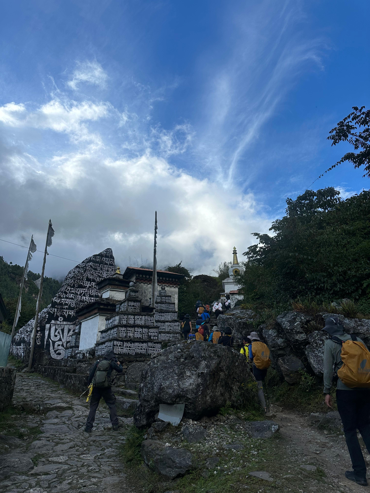
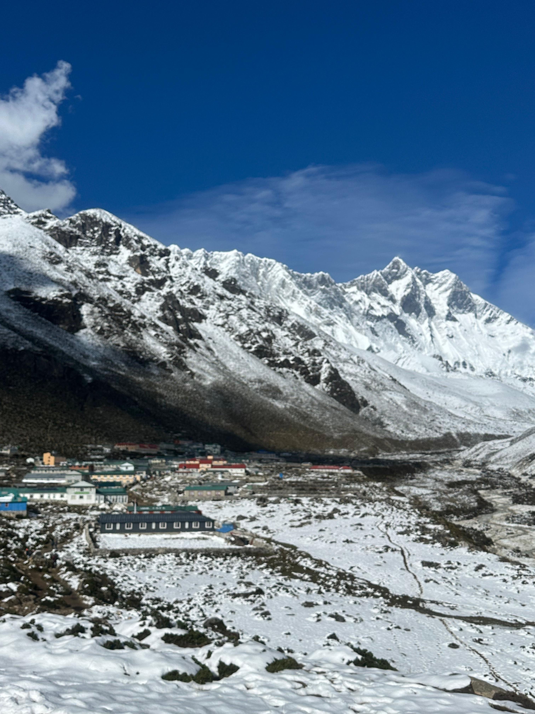
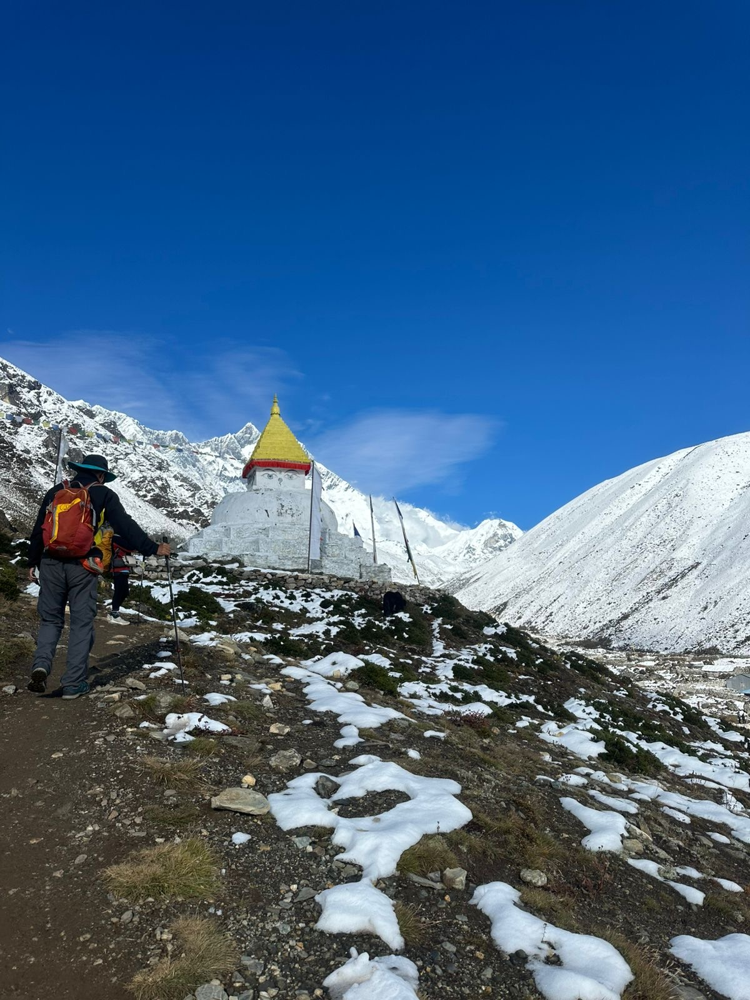
Day 2: Kathmandu sightseeing and trek preparation
Altitude: Approximately 1,355 m / 4,446 ft
Hiking / Time: Sightseeing (4–5 hours)
Distance: City exploration / Rest
Accommodation: Kathmandu hotel
The second day combines a short Kathmandu sightseeing experience with final preparation for the Everest Three High Passes Trek.
Depending on the timing of the itinerary and the flight schedule, selected cultural and heritage sites can be visited during the day before returning to the hotel.
The main purpose of this day, however, is to make sure the trekking arrangements are ready.
A complete high-pass itinerary requires more preparation than a standard low-altitude trek. Equipment, luggage, permits, flight arrangements and personal supplies should all be checked before heading to Lukla.
The trekking team can review:
- Final day-by-day route
- Flight schedule
- Trekking permits
- Guide arrangement
- Porter arrangement
- Accommodation
- Meals
- Emergency communication
- High-pass preparation
- Equipment requirements
The guide can also explain the sequence of the three passes and the major high-altitude days ahead.
The route will eventually involve three crossings above 5,300 m, so the group should understand that weather and trail conditions may occasionally require adjustments.
This is also the last convenient opportunity to purchase forgotten trekking essentials in Kathmandu.
The evening is kept relatively relaxed so that you can rest before the flight to Lukla the following morning.
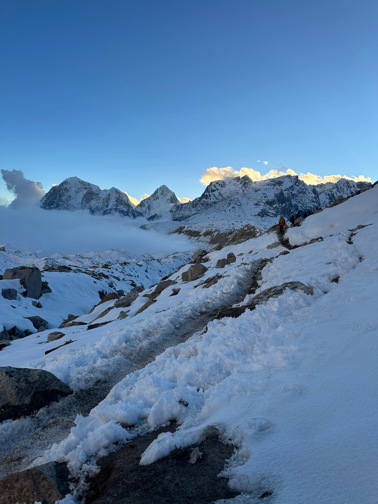
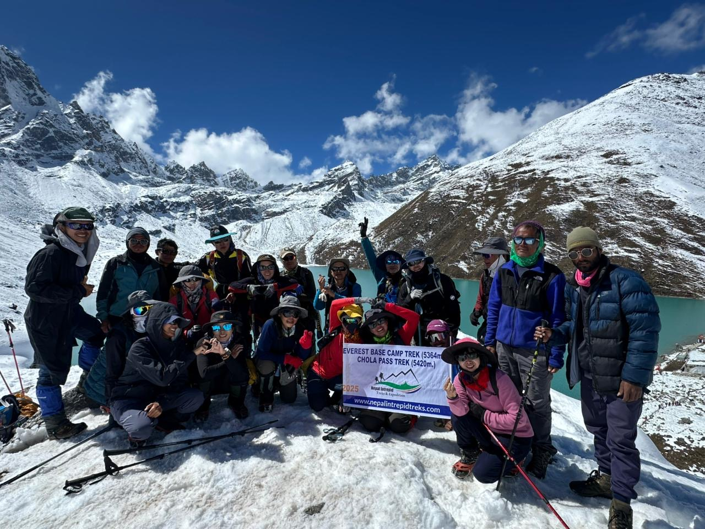
Day 3: Fly to Lukla and trek to Phakding
Lukla: Approximately 2,850 m / 9,350 ft · Phakding: Approximately 2,650 m / 8,694 ft
Hiking / Time: About 3 hours
Distance: Approximately 7.5 km
Accommodation: Teahouse in Phakding
The mountain journey begins with an early flight to Lukla.
The flight is short, but the transition from Kathmandu to the mountain environment is immediate. Lukla sits at approximately 2,850 m and serves as the main gateway for the classic Khumbu trekking route.
Once the group lands, the trekking crew organizes the luggage and begins the first walking stage toward Phakding.
The trail gradually descends and follows the Dudh Koshi Valley through mountain settlements and forested terrain.
Although the destination is not far away, the first day is designed to be short.
The purpose is to start the trek without unnecessary fatigue and allow the body to adjust to the new environment.
The trail provides the first experience of:
- Stone-paved mountain paths
- Suspension bridges
- River valleys
- Pine and other forest vegetation
- Buddhist cultural features
- Sherpa settlements
- Local teahouses
Phakding is a practical first-night stop because it allows the group to settle into mountain accommodation without immediately undertaking a long ascent.
The evening can be spent resting, eating and preparing the daypack for the first substantial walking day toward Namche Bazaar.
Flight operations can be affected by weather, visibility and other operational conditions. For this reason, the day's schedule should retain reasonable flexibility.
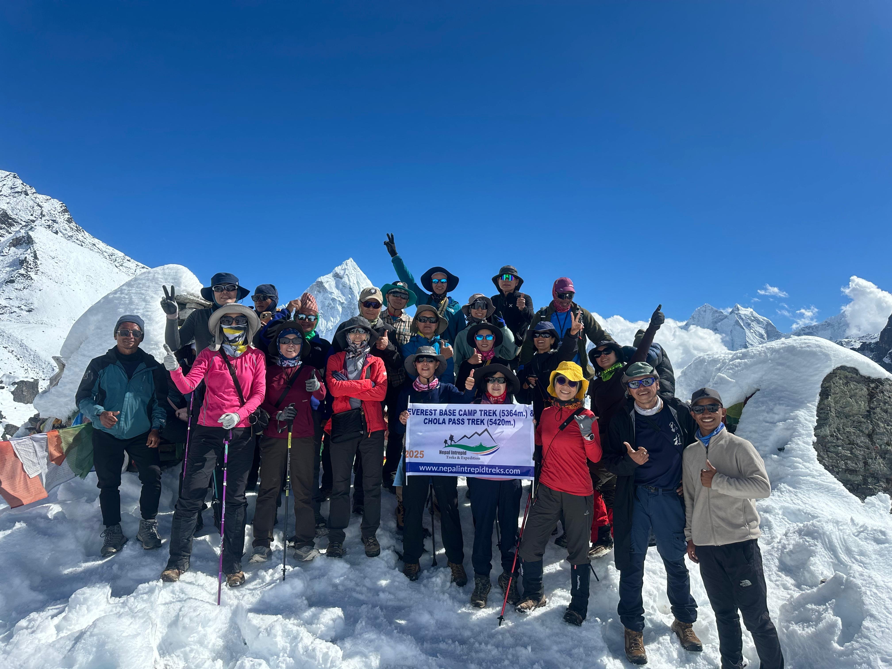
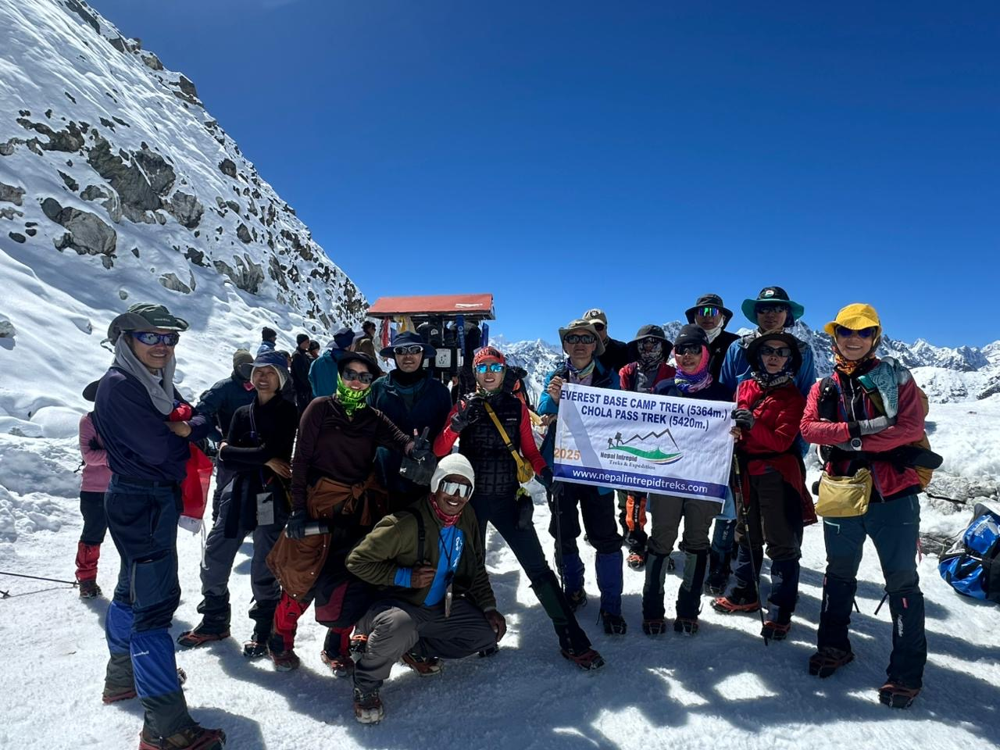
Day 4: Phakding to Namche Bazaar
Phakding: Approximately 2,650 m / 8,694 ft · Namche Bazaar: Approximately 3,443 m / 11,296 ft
Hiking / Time: About 6 hours
Distance: Approximately 12 km
Accommodation: Teahouse or lodge in Namche
The fourth day introduces the first major climb of the Everest Three High Passes route.
From Phakding, the trail continues along the Dudh Koshi Valley and crosses a series of suspension bridges before gradually gaining elevation.
The route passes through settlements and forest before entering the protected Everest region.
As the trail approaches Namche Bazaar, the terrain becomes significantly steeper.
The final ascent is one of the first sections where trekkers begin to understand the physical demands of the expedition.
At this stage, however, the objective is controlled progression rather than fast movement.
Namche Bazaar is the main commercial and acclimatization center of the Khumbu.
The settlement provides substantially more facilities than the smaller villages on the trail, making it an important base before the route moves toward higher elevations.
After reaching Namche, the group checks into the accommodation, has a meal and rests.
The following day is deliberately reserved for acclimatization.
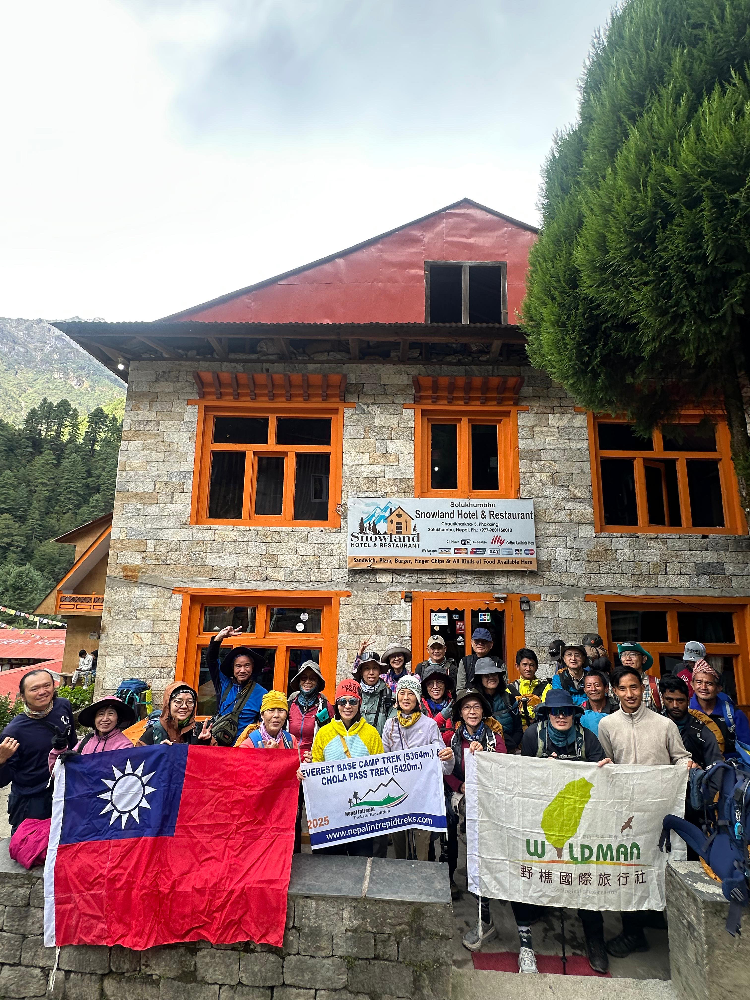
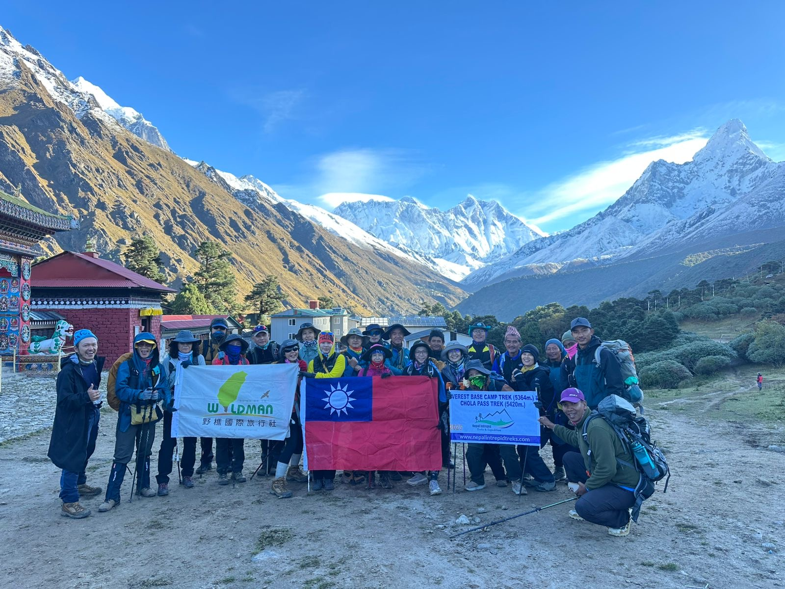
Day 5: Acclimatization hike from Namche to the Everest View Hotel area
Namche Bazaar: Approximately 3,443 m / 11,296 ft · Everest View Hotel: Approximately 3,880 m / 12,730 ft
Hiking / Time: About 4 hours
Distance: Approximately 7 km
Accommodation: Namche Bazaar
The fifth day is an acclimatization day.
Instead of moving to a new overnight elevation, the group climbs toward the Everest View area before returning to sleep in Namche.
The hike provides a controlled opportunity to spend time at a higher elevation while maintaining the same sleeping altitude.
When weather conditions are favorable, the surrounding viewpoint can provide views toward:
- Mount Everest
- Lhotse
- Ama Dablam
- Thamserku
- Kongde
- Other Khumbu peaks
The day's walking also introduces the body to higher elevations without immediately moving the overnight elevation above 3,800 m.
The acclimatization hike is not only about the viewpoint.
It also provides time to assess individual responses to altitude.
The guide can monitor:
- Walking pace
- Breathing
- Energy levels
- Appetite
- Headache or other altitude symptoms
- Hydration
- General condition
After returning to Namche, the afternoon can be used to rest and explore the settlement.
This is also a useful time to inspect trekking equipment before the route continues toward Tengboche and the higher Khumbu.
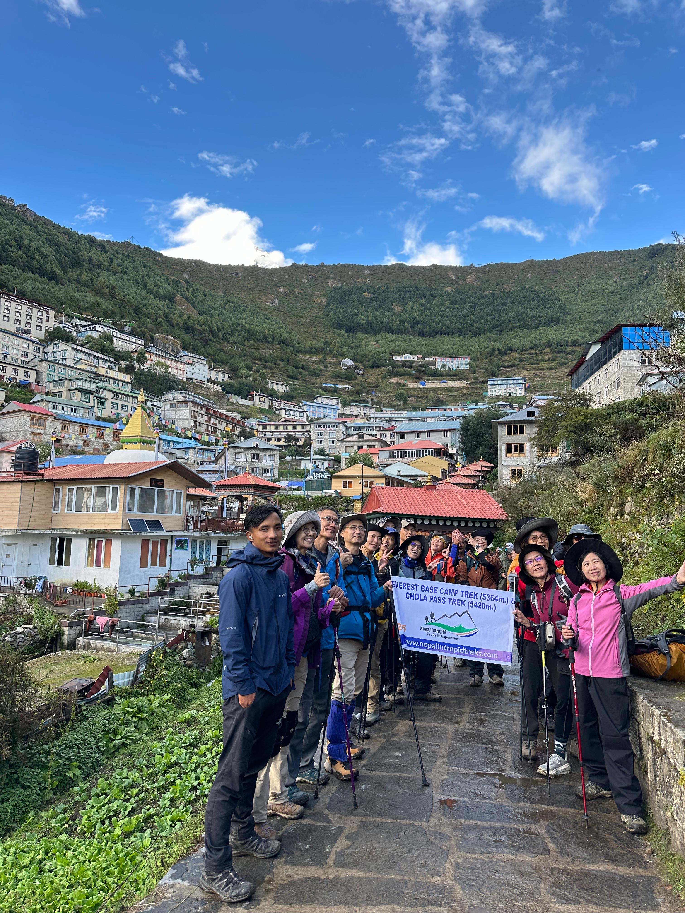

Day 6: Namche Bazaar to Tengboche
Namche Bazaar: Approximately 3,443 m / 11,296 ft · Tengboche: Approximately 3,860 m / 12,664 ft
Hiking / Time: About 6 hours
Distance: Approximately 10 km
Accommodation: Teahouse in Tengboche
The trail leaves Namche and follows the mountain contours toward Tengboche.
The route provides broad views across the Khumbu, with some of the major Himalayan peaks visible from suitable sections of the trail when weather conditions are clear.
The route generally follows an undulating path, including sections of descent toward the Dudh Koshi before climbing toward Tengboche.
The landscape begins to change gradually.
Forest remains an important feature, but the mountains become increasingly dominant as elevation rises.
Tengboche is one of the most important cultural locations on the Everest route because of its monastery and long-standing Buddhist heritage.
The arrival at Tengboche therefore combines a substantial trekking stage with a cultural experience.
After reaching the settlement, the group checks into the teahouse and has time to rest.
The overnight altitude remains below 4,000 m, maintaining the gradual acclimatization progression before the route moves toward Dingboche.
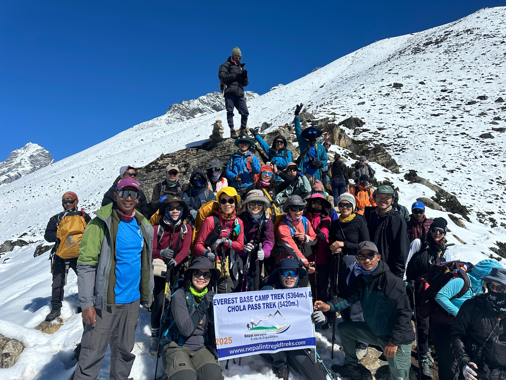
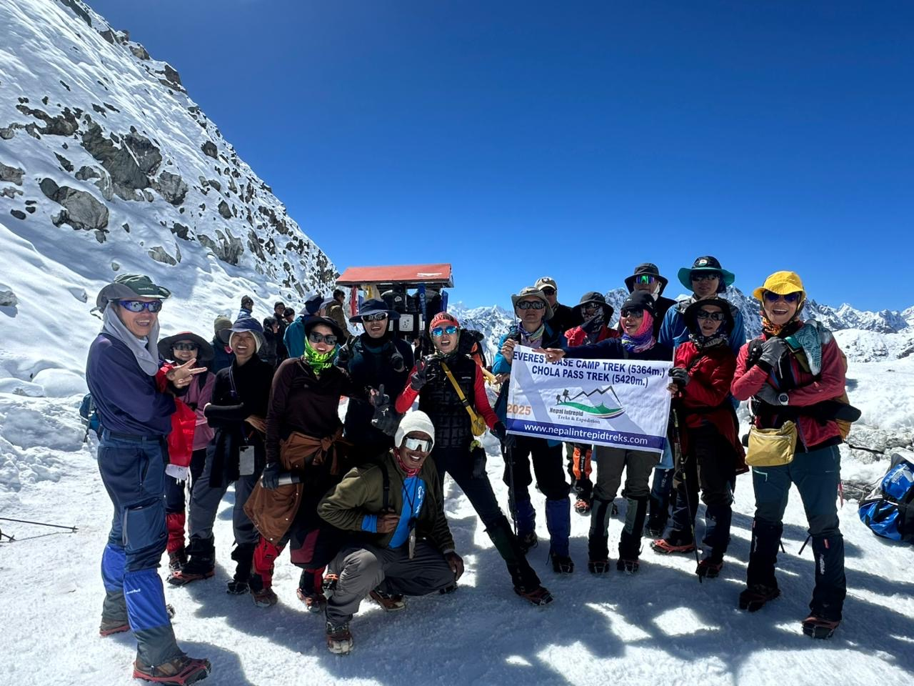
Day 7: Tengboche to Dingboche
Tengboche: Approximately 3,860 m / 12,664 ft · Dingboche: Approximately 4,450 m / 14,600 ft
Hiking / Time: About 6 hours
Distance: Approximately 12 km
Accommodation: Teahouse in Dingboche
The route continues deeper into the Khumbu toward Dingboche.
The landscape becomes increasingly open as the trail moves above the stronger forest environment of the lower elevations.
The trail passes through traditional settlements and areas of high-altitude agriculture before reaching Dingboche.
At approximately 4,450 m, Dingboche is one of the major high-altitude settlements on the route.
This is a significant stage of the itinerary because the group has now moved beyond 4,000 m.
Walking should be slower and more deliberate.
The focus becomes:
- Controlled pace
- Regular hydration
- Adequate food
- Monitoring altitude symptoms
- Good rest
- Appropriate clothing
Dingboche also provides the base for the next acclimatization hike.
The following day does not move the group to a new overnight destination. Instead, it takes the group higher during the day and returns to Dingboche.
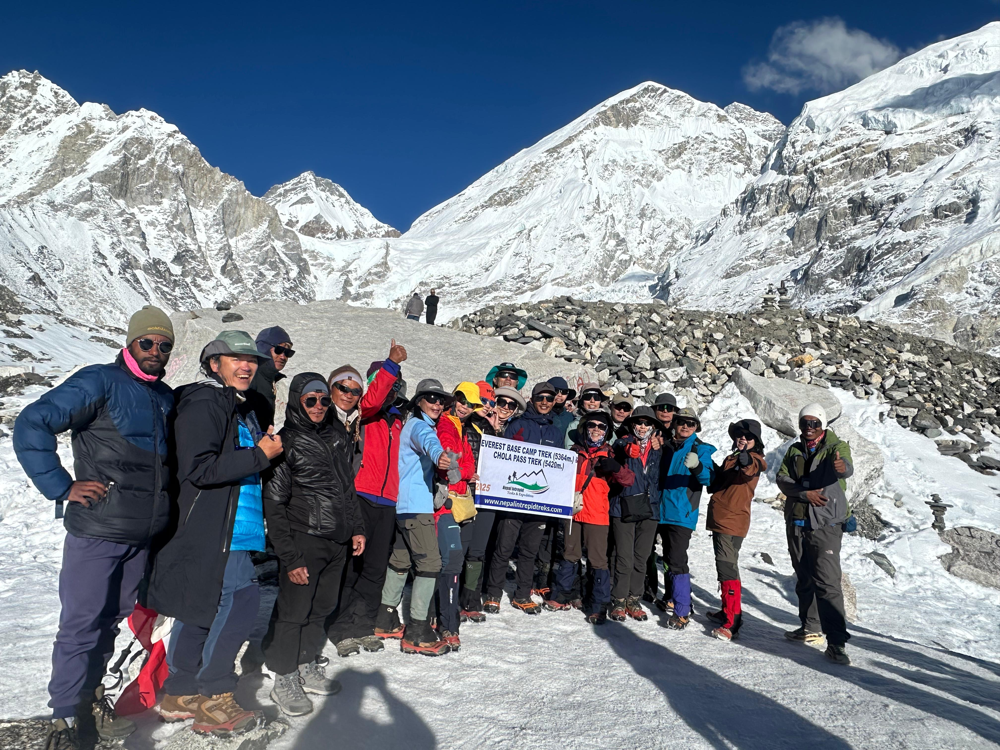
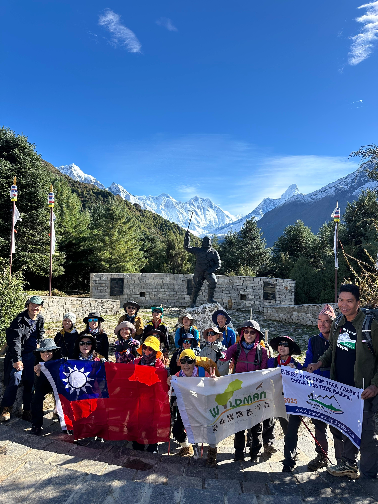
Day 8: Nangkartshang Hill hike and return to Dingboche
Dingboche: Approximately 4,450 m / 14,600 ft · Nangkartshang Hill: Approximately 5,100 m / 16,732 ft
Hiking / Time: About 4–5 hours
Distance: Approximately 7.4 km
Accommodation: Dingboche
The eighth day is dedicated to acclimatization at one of the most important stages of the entire Three Passes itinerary.
The group climbs from Dingboche toward Nangkartshang Hill, reaching approximately 5,100 m at the viewpoint before returning to Dingboche.
This provides additional daytime exposure to high altitude without requiring the group to sleep at 5,100 m.
The climb itself can be physically demanding because of the elevation.
The purpose is not to reach the top as quickly as possible. A steady pace and regular rest are more appropriate.
From the higher viewpoint, weather permitting, there are wide views across the surrounding mountains and valleys.
The day can also be used to evaluate how each member of the group is responding to altitude.
This is especially important because the next stages involve:
- Chhukung
- Kongma La
- Lobuche
- Everest Base Camp
- Kala Patthar
- Cho La
- Gokyo
- Renjo La
After returning to Dingboche, the remainder of the afternoon should focus on food, hydration, rest and equipment preparation.
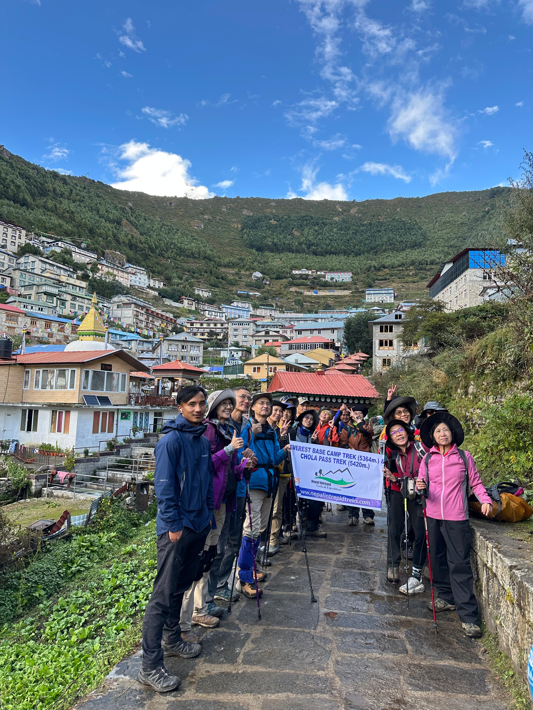
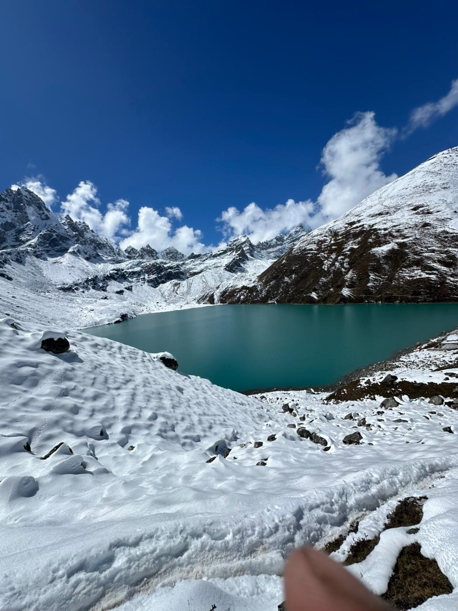
Day 9: Dingboche to Chhukung
Dingboche: Approximately 4,450 m / 14,600 ft · Chhukung: Approximately 4,700 m / 15,420 ft
Hiking / Time: About 2.5 hours
Distance: Approximately 4.1 km
Accommodation: Teahouse in Chhukung
The route from Dingboche to Chhukung is short but strategically important.
The trail moves farther into the Imja Valley and reaches Chhukung at approximately 4,700 m.
The relatively short walking stage allows the group to conserve energy before the first high-pass crossing.
Chhukung is the main preparation point for Kongma La on this route.
After arrival, there is time to organize everything required for the next morning.
The guide can review:
- Weather forecast
- Snow and ice conditions
- Expected crossing time
- Water requirements
- Snacks
- Clothing
- Headlamp
- Trekking poles
- Footwear
- Traction equipment
- Group pace
The main luggage remains with the porter where applicable, but every trekker should make sure the personal daypack contains everything needed for the crossing.
This includes warm clothing, waterproof protection, food, water, medication, sun protection and essential personal items.
An early night is useful because Kongma La is one of the most demanding stages of the trek.
Day 10: Chhukung to Lobuche via Kongma La Pass
Chhukung: Approximately 4,700 m / 15,420 ft · Kongma La: Approximately 5,535 m / 18,159 ft · Lobuche: Approximately 4,910 m / 16,109 ft
Hiking / Time: About 7 hours
Distance: Approximately 11 km
Accommodation: Teahouse in Lobuche
The first major high-pass crossing of the package is Kongma La, which reaches approximately 5,535 m.
This is one of the defining days of the Everest Three High Passes Trek.
The group starts early from Chhukung.
The trail climbs progressively away from the settlement and enters an increasingly exposed high-altitude environment.
The route can include rocky terrain, loose surfaces, moraine and, depending on season and recent weather, snow or ice.
As the group gains elevation, walking becomes slower.
The final approach to the pass requires a sustained effort at high altitude.
Reaching Kongma La marks the highest point of the three named passes and a major milestone in the circuit.
However, the day does not finish at the pass.
A substantial descent toward Lobuche follows.
This descent can be demanding because it takes place after several hours of climbing at high altitude.
The group should therefore maintain a controlled pace throughout the afternoon.
The route eventually connects with the Lobuche side of the Khumbu.
Lobuche provides the overnight recovery point after the first major pass.
The evening is focused on food, hydration and rest because the following day's itinerary continues at very high altitude toward Everest Base Camp.
Day 11: Lobuche to Gorak Shep, Everest Base Camp and back to Gorak Shep
Lobuche: Approximately 4,910 m / 16,109 ft · Everest Base Camp: Approximately 5,364 m / 17,598 ft · Gorak Shep: Approximately 5,180 m / 16,995 ft
Hiking / Time: About 7–8 hours
Distance: Approximately 11.5 km
Accommodation: Teahouse in Gorak Shep
The route now enters the classic Everest Base Camp section.
From Lobuche, the trail follows the Khumbu Glacier environment toward Gorak Shep.
The landscape becomes increasingly barren as the route climbs above the tree line and moves through rugged high-altitude terrain.
Gorak Shep is the overnight settlement and the base for the Everest Base Camp excursion.
After reaching the area, the group continues toward Everest Base Camp.
The trail around the upper Khumbu Glacier can be uneven and rocky, with moraine and changing surfaces.
The elevation makes the walking demanding even when the distance itself does not appear excessive.
At Everest Base Camp, the group has time to experience the surroundings and take photographs before returning along the same general route toward Gorak Shep.
Because the group has only recently completed Kongma La, this is another demanding day.
The route therefore needs to be walked at a controlled pace.
After returning to Gorak Shep, the evening should be used for recovery.
The following morning begins early with the climb to Kala Patthar.
Day 12: Kala Patthar and trek to Dzongla
Gorak Shep: Approximately 5,180 m / 16,995 ft · Kala Patthar: Approximately 5,545 m / 18,192 ft · Dzongla: Approximately 4,830 m / 15,846 ft
Hiking / Time: About 8 hours
Distance: Approximately 13.7 km
Accommodation: Teahouse in Dzongla
The day begins before sunrise with the climb toward Kala Patthar.
At approximately 5,545 m, Kala Patthar is slightly higher than Kongma La and is the highest point of this itinerary if included as planned.
The climb is steep, and the elevation makes even moderate uphill movement physically demanding.
The effort is rewarded by a close mountain panorama when the weather is clear.
- Views can include:
- Everest
- Nuptse
- Pumori
- Lingtren
- Other surrounding Himalayan peaks
The early start also provides the best opportunity to experience changing morning light over the mountains.
After descending toward Gorak Shep, the route continues toward Dzongla.
This is an important transition in the itinerary.
After descending the upper Khumbu trail, the circuit branches toward Dzongla and the Cho La section. Part of the approach trail is retraced before that turn.
The trail becomes quieter and more remote.
Dzongla is a small high-altitude settlement surrounded by rugged mountain slopes.
The descent to approximately 4,830 m provides some reduction in sleeping altitude after the very high night at Gorak Shep.
The day remains demanding because it combines the Kala Patthar ascent with several additional hours of trekking toward Dzongla.
Day 13: Dzongla to Thangnak (Dragnak) via Cho La Pass
Dzongla: Approximately 4,830 m / 15,846 ft · Cho La: Approximately 5,420 m / 17,782 ft · Dragnak/Thangnak: Approximately 4,700 m / 15,420 ft
Hiking / Time: About 7 hours
Distance: Approximately 10.8 km
Accommodation: Teahouse in Dragnak or Thangnak
The second major high-pass crossing is Cho La, approximately 5,420 m high.
The group starts early from Dzongla.
The route climbs away from the settlement into increasingly rugged terrain.
Cho La is known for high-altitude glacial terrain, and snow or ice can affect the trail depending on the season and recent weather.
The conditions on the crossing should therefore be assessed locally before departure.
The approach to the pass requires a sustained climb and careful movement.
The higher the trail rises, the slower the pace usually becomes.
The pass is a major physical milestone because it connects the Everest Base Camp side of the Khumbu with the Gokyo Valley.
After crossing Cho La, the route descends toward Dragnak, also known as Thangnak.
The descent is an important part of the day's effort.
Trekkers may feel considerable fatigue after the combination of high altitude, uneven terrain and a long walking day.
Once at Dragnak or Thangnak, the group settles into the teahouse and focuses on recovery.
The overnight elevation is significantly lower than the pass itself, providing a useful reduction before entering the Gokyo Valley.
Day 14: Thangnak (Dragnak) to Gokyo
Dragnak/Thangnak: Approximately 4,700 m / 15,420 ft · Gokyo: Approximately 4,750 m / 15,584 ft
Hiking / Time: About 3 hours
Distance: Approximately 4.9 km
Accommodation: Teahouse in Gokyo
After the demanding Cho La crossing, the route to Gokyo is comparatively short.
The trail continues through a high-altitude glacial environment before reaching the Gokyo Valley.
This is one of the major landscape transitions of the Three Passes circuit.
The rugged terrain around Cho La gives way to the distinctive Gokyo environment of glacial lakes, mountain slopes and the surrounding high Himalayan peaks.
The route approaches the famous Gokyo Lakes before reaching the settlement of Gokyo.
The afternoon is deliberately less demanding.
- There is time to:
- Rest
- Explore the lakeside
- Photograph the surrounding mountains
- Check equipment
- Prepare for Gokyo Ri
- Hydrate and recover
Gokyo is one of the most scenic accommodation points on the entire route.
The settlement also provides the base for the following day's high-altitude exploration.
Day 15: Gokyo Ri and Gokyo Valley exploration
Gokyo: Approximately 4,750 m / 15,584 ft · Gokyo Ri: Approximately 5,357 m / 17,575 ft
Hiking / Time: About 3–4 hours
Distance: Approximately 4.6 km
Accommodation: Gokyo
The fifteenth day is dedicated to Gokyo and the high viewpoint of Gokyo Ri.
The group begins the climb early.
The trail rises steeply from Gokyo toward the viewpoint, and the elevation makes the climb considerably more demanding than the distance suggests.
At approximately 5,357 m, Gokyo Ri provides a panoramic viewpoint over the Gokyo Lakes and surrounding Himalayan landscape.
When visibility is favorable, views may include:
- Everest
- Lhotse
- Makalu
- Cho Oyu
- Gokyo Lakes
- Ngozumpa Glacier
- Surrounding Khumbu peaks
After completing the climb, the group returns to Gokyo.
The remainder of the day can be used for walking around the lake area, photography or rest.
This day also serves a practical purpose within the itinerary.
The group has already crossed Kongma La and Cho La, but another major pass remains.
The following day's objective is Renjo La, approximately 5,360 m.
A comfortable afternoon and early evening allow the group to prepare for this final high-pass stage.
Day 16: Gokyo to Lungden via Renjo La Pass
Gokyo: Approximately 4,750 m / 15,584 ft · Renjo La: Approximately 5,360 m / 17,585 ft · Lungden: Approximately 4,368 m / 14,331 ft
Hiking / Time: About 6–7 hours
Distance: Approximately 13 km
Accommodation: Teahouse in Lungden
The third and final major high-pass crossing of the trek is Renjo La, approximately 5,360 m.
The day begins early from Gokyo.
The trail gradually climbs away from the lakes and toward the high pass.
The approach becomes increasingly exposed and the walking pace slows as the elevation rises.
Renjo La provides a different mountain perspective from Kongma La and Cho La.
The high point looks across the surrounding mountain valleys, with visibility depending on weather and atmospheric conditions.
The climb to Renjo La represents the final major ascent of the three-pass sequence.
After reaching the pass, the group begins the long descent toward Lungden.
This descent significantly reduces the overnight altitude and provides important recovery after the high crossing.
The route also moves deeper into the upper Khumbu and away from the main Everest Base Camp corridor.
By the time the group reaches Lungden, all three major passes have been completed:
- Kongma La → Cho La → Renjo La
The high-pass section of the journey is now finished.
Day 17: Lungden to Namche Bazaar
Lungden: Approximately 4,368 m / 14,331 ft · Namche Bazaar: Approximately 3,443 m / 11,296 ft
Hiking / Time: About 6–7 hours
Distance: Approximately 18.4 km
Accommodation: Teahouse or lodge in Namche
The seventeenth day is a long descent through the upper Khumbu toward Namche Bazaar.
The route follows the Thame side of the valley and progressively loses elevation.
This is a very different environment from the exposed terrain around the high passes.
As the trail descends, vegetation gradually returns and the surrounding landscape becomes less barren.
The route passes through traditional settlements and eventually reconnects with the broader Namche trekking corridor.
The distance is substantial, but the decreasing altitude generally makes the day physically different from the high-pass crossings.
The arrival in Namche is an important psychological and logistical transition.
After spending many days at high altitude, the group returns to a much more developed mountain settlement.
Namche provides access to a broader selection of food, shops, communication services and other basic facilities.
The evening can therefore be used for:
- Recovery
- Eating a substantial meal
- Calling family
- Checking the flight schedule
- Organizing luggage
- Resting before the final trekking day
Day 18: Namche Bazaar to Lukla
Namche Bazaar: Approximately 3,443 m / 11,296 ft · Lukla: Approximately 2,850 m / 9,350 ft
Hiking / Time: About 7–8 hours
Distance: Approximately 19.5 km
Accommodation: Teahouse or lodge in Lukla
The eighteenth day is the final full trekking stage.
The route follows the familiar lower Khumbu trail from Namche toward Lukla.
Although the elevation is steadily decreasing, the distance is long and the group may still be carrying the accumulated fatigue of the previous two weeks.
The trail passes through:
- Sherpa villages
- Forest
- Suspension bridges
- River valleys
- Stone paths
- Lower-altitude trekking landscapes
Sections of the trail may feel familiar because parts of the route were used during the approach to Namche.
However, the return journey is physically different because the group has just completed all three high passes.
Maintaining a steady pace is more important than trying to finish quickly.
As the trail approaches Lukla, the landscape becomes greener and more settled.
Once the group reaches Lukla, the trekking section of the Everest Three High Passes package is complete.
The evening provides time to:
- Confirm the following day's flight
- Organize bags
- Settle personal expenses
- Complete planned tipping
- Rest
- Prepare for the return to Kathmandu
The following morning depends on the operating conditions of the mountain flight.
Day 19: Planned flight from Lukla and return to Kathmandu
Lukla: Approximately 2,850 m / 9,350 ft · Kathmandu: Approximately 1,355 m / 4,446 ft
Hiking / Time: 5 to 7 hours
Distance: Trek stage
Accommodation: Kathmandu hotel
- Travel: Approximately 30-minute flight
The nineteenth day begins with the return flight from Lukla to Kathmandu.
The mountain flight is an important logistical part of the itinerary.
Weather, visibility, aircraft availability, airport operations and other conditions can affect flight schedules.
The package therefore benefits from having a buffer before any important international departure.
Once the flight reaches Kathmandu, you are transferred to your hotel.
The change in altitude is immediate and provides a noticeable transition from the mountain environment back to the city.
The remainder of the day can be used for:
- Rest
- Recovery
- Collecting stored luggage
- Organizing trekking equipment
- Photograph review
- Personal shopping
- Relaxed meals
- Preparing for departure
The planned return is on Day 19. Day 20 is the full flexible day before the Day 21 departure; confirm additional flexibility for disruptions lasting longer than that slot.
Day 20: Leisure and recovery day in Kathmandu
Altitude: Approximately 1,355 m / 4,446 ft
Hiking / Time: Flexible rest day
Distance: City exploration / Rest
Accommodation: Kathmandu hotel
The twentieth day is reserved for rest and flexible activities in Kathmandu.
After completing the three major passes, Everest Base Camp, Kala Patthar, Gokyo Ri and the broader Khumbu circuit, the body benefits from a low-demand day.
You can use the day according to your schedule.
- Possible activities include:
- Resting at the hotel
- Exploring Kathmandu
- Visiting cultural sites
- Shopping
- Enjoying Nepali cuisine
- Organizing photographs
- Preparing luggage
- Meeting friends or travel companions
- Reviewing onward travel arrangements
The day also acts as a contingency buffer.
Mountain flights can occasionally experience delays, and having an uncommitted Kathmandu day reduces the risk of placing an international flight immediately after the planned return from Lukla.
For travelers with onward international flights, this extra day provides valuable flexibility.
Day 21: Final departure from Nepal
Kathmandu – 1,355 m / 4,446 ft
Hiking / Time: Airport transfer
Distance: City exploration / Rest
Accommodation: Not included unless requested
The final day marks the end of the Everest Three High Passes Trek package.
The airport transfer is arranged according to your international flight schedule.
Before leaving the hotel, check all important belongings:
- Passport
- Flight documents
- Insurance information
- Wallet
- Remaining Nepalese cash
- Medication
- Phone
- Chargers
- Power bank
- Camera
- Electronics
- Personal documents
- Stored luggage
The final transfer takes you from Kathmandu to the international airport for your departure from Nepal.
Want a Tailor-Made Three Passes Itinerary?
Need extra acclimatization days, a reverse Renjo La-first route, or a private departure? Talk with our Khumbu trekking experts.
What's Included in the 21-Day Package
The components below form our verified full-service expedition package. Your confirmed booking quotation covers all core logistics from Kathmandu arrival to final departure:
Airport Arrival & Departure Transfers
Private vehicle airport transfers on arrival and final departure on the agreed dates (Day 1 and Day 21).
4 Nights 3-Star Kathmandu Hotel
Four scheduled Kathmandu hotel nights in Thamel with daily breakfast included (Days 1, 2, 19, and 20).
Day 2 Kathmandu Cultural Tour & Gear Check
Guided Kathmandu UNESCO heritage exploration, pre-trek orientation, gear inspection, and permit processing.
Lukla Return Mountain Flights & Ground Transfers
Scheduled domestic flights (Kathmandu/Ramechhap to Lukla and return) including all applicable airport ground transfers.
16 Mountain Teahouse & Lodge Nights
Sixteen scheduled nights in standard clean mountain lodges along the unmodified circuit (Days 3 through 18).
Full-Board Trekking Meals (B, L, D)
Trekking breakfast, lunch, and dinner with hot tea/coffee during all 16 mountain walking days, plus Welcome & Farewell dinners in Kathmandu.
Licensed Sherpa Guide & Porter Support
Government-certified high-altitude Sherpa guide and experienced mountain porters (1 porter for 2 trekkers, max 20–22 kg load).
All National Park & Local Trekking Permits
Sagarmatha National Park entry permit, Khumbu Pasang Lhamu Trek-Card, and official TIMS registration card.
Pulse Oximeter & Comprehensive Medical Kit
Twice-daily pulse oximetry monitoring, first aid medical supplies, and 24/7 emergency response coordination.
Company Duffel Bag & Route Map
Namaste Hiking Trek waterproof expedition duffel bag (yours to keep) and detailed physical topographical route map.
What's Excluded from the Package
Please ensure you budget separately for the following personal expenses and insurance requirements:
International Airfare & Nepal Entry Visa
International airfare to/from Kathmandu and Nepal tourist visa fees ($30 for 15 days, $50 for 30 days on arrival).
Travel Insurance with High-Altitude & Heli Cover
Mandatory personal travel insurance covering emergency helicopter evacuation and medical care up to 6,000 meters.
Lunches and Dinners in Kathmandu
Lunch and dinner in Kathmandu (except welcome and farewell dinners), giving you freedom to explore local restaurants.
Personal Trekking Equipment & Clothing
Personal clothing, broken-in trekking boots, -20°C sleeping bag, and down jacket (rental available in Kathmandu for $1/day).
Bottled Water, Soft Drinks & Alcohol
Bottled mineral water, canned soft drinks, alcoholic beverages, espresso coffees, and personal snacks.
Hot Showers, Device Charging & Wi-Fi Fees
Lodge hot water shower fees ($3–$6), battery/phone charging ($2–$5), and Everest Link Wi-Fi cards.
Tipping for Sherpa Guide & Mountain Porters
Tips and gratuities for your guide and porter crew (customarily 10–15% of total trip cost distributed at Lukla).
Excess Baggage on Domestic Flights
Weight above the standard 15 kg (10 kg check-in + 5 kg hand luggage) limit on Lukla flights ($1–$2 per extra kg).
Helicopter Upgrades or Scenic Flights
Optional helicopter transfers between Kathmandu and Lukla, or scenic fly-backs from Gorak Shep / Gokyo.
Costs Due to Severe Weather & Flight Delays
Extra accommodation, meals, or rerouting arising from Lukla flight cancellations beyond our planned Day 20 buffer.
Note on Rescue Coordination: Emergency rescue coordination is an integral part of our mountain guiding service. However, actual evacuation and medical treatment invoices are billed directly to your travel insurance policy. Always verify your insurance covers trekking up to 6,000 m.
Booking Dates & Availability for Everest Three High Passes Trek (21 Days)
05
AUG
Aug 5 – Aug 25, 2026
AVAILABLE$1,499 pp
09
AUG
Aug 9 – Aug 29, 2026
AVAILABLE$1,499 pp
13
AUG
Aug 13 – Sep 2, 2026
AVAILABLE$1,499 pp
17
AUG
Aug 17 – Sep 6, 2026
AVAILABLE$1,499 pp
21
AUG
Aug 21 – Sep 10, 2026
AVAILABLE$1,499 pp
Packing List for Everest Three High Passes Trek
Gear Rental in Kathmandu: Sleeping bags & down jackets — USD 1/day per item
Printable Checklist
Separate your porter-carried main duffle (max 10–12 kg per person) from the daypack you carry while walking. Keep warm layers, water, rain protection, medication, and valuables with you at all times.
1. Hiking Gear (11 items)
2. Garments & Layers (19 items)
3. Sleeping System (5 items)
4. Toiletries and Hygiene (16 items)
5. Electronics (9 items)
6. Miscellaneous and Documents (10 items)
Essential High-Pass Gear Guidance
How should traction equipment be chosen?
Do not automatically assume full mountaineering crampons are required. The standard trekking route is not a technical climbing expedition. However, snow and ice conditions on Cho La glacier and Kongma La change rapidly. Lightweight steel microspikes paired with sturdy boots provide the ideal balance. Your Sherpa guide inspects route conditions and confirms traction requirements prior to crossing.
Choose a sleeping system for the actual season
A -15°C to -20°C sleeping bag is essential for high settlements above 4,500m (Dingboche, Chhukung, Lobuche, Gorak Shep, Dzongla, Thangnak, Gokyo, and Lungden). Teahouses provide quilts, but unheated wooden bedrooms routinely drop well below freezing (-10°C to -15°C). Adding a silk liner provides hygiene and extra warmth.
Keep airline and porter allowances separate
Domestic flights to Lukla allow 15 kg total (10 kg duffel + 5 kg daypack). Our porter allocation permits 10–12 kg per trekker in the main duffel. Non-trekking city clothes and luggage can be stored securely and free of charge in our Kathmandu hotel luggage storage until your return on Day 19.
Prepare the high-pass daypack
On pass days (Kongma La, Cho La, Renjo La), your porter walks at their own steady pace and will reach the next lodge hours before or after you. Always carry 2L of water in insulated flasks, high-energy snacks, wind/rain shell, warm mittens, fleece beanie, sunglasses, and personal first-aid in your walking daypack.
Read before you book, Everest Three High Passes Trek
To help you prepare thoroughly for the demanding Everest Three Passes circuit, we have compiled detailed operational guidance on high-altitude accommodation, meals, pass terrain, training plans, flight logistics, and emergency protocols.
If you have any specific questions about gear, route options, or acclimatization, message our Kathmandu guiding team directly on WhatsApp.
0/21 read
Nice start — keep going
Hotel & Teahouse Expectations in the Khumbu
Hotel and teahouse expectations
Accommodation is an important part of the Everest Three High Passes Trek package because the route moves through both well-developed Khumbu settlements and remote high-altitude villages where lodging is simple and limited. The 21-day itinerary uses a combination of Kathmandu hotels and local teahouses or mountain lodges along the trekking route, with accommodation standards changing naturally as the trail gains elevation and enters the three-pass circuit.
In Kathmandu, travelers stay in a conventional hotel with substantially more facilities than are available in the mountains. Once the trek begins from Lukla, accommodation changes to the traditional Himalayan teahouse system.
A teahouse is generally a small locally operated mountain lodge providing a bed, dining area and basic guest facilities. In larger settlements such as Namche Bazaar, accommodation can be comparatively comfortable and may offer private rooms, hot showers, charging and internet access. In remote settlements such as Thangnak, Dzongla and Lungden, facilities are more basic because these locations have fewer buildings, lower service capacity and more difficult supply conditions.
The highest part of the itinerary is also where accommodation becomes the simplest. Around Lobuche and Gorak Shep, trekkers should expect cold rooms, basic furnishings and shared facilities to be more common than hotel-style comforts.
The purpose of accommodation on the Three Passes Trek is practical. You need a secure place to sleep, eat, recover and prepare for the next day's route. On a demanding circuit that reaches above 5,500 m, good preparation and realistic expectations about mountain lodging are more important than expecting luxury facilities.
Kathmandu hotel arrangements
The Kathmandu portions of the package use conventional hotel accommodation.
This provides a major contrast with mountain teahouses.
- Typical city-hotel facilities can include:
Private bedroom
Private bathroom
Hot water
Electricity
- Wi-Fi
Charging
Restaurant services
Housekeeping
Luggage storage
The exact hotel category depends on the selected package.
The first Kathmandu stay is primarily used for arrival, preparation and trek logistics.
The later Kathmandu stay provides recovery time after the mountain trek and acts as a useful buffer before international travel.
Namche and the approach settlements
Namche Bazaar generally offers some of the broadest accommodation choices on the entire trek.
The settlement is an important commercial and tourism center of the Khumbu, so its lodging infrastructure is more developed than at most high-altitude villages.
Depending on the selected package and availability, accommodation can include:
Private rooms
Twin rooms
Shared rooms
Private bathrooms in some properties
Shared bathrooms
Hot showers
Electricity
Charging
- Wi-Fi
Upper Khumbu rooms and simple facilities
Chhukung, Lobuche, Gorak Shep, Dzongla, Thangnak, Gokyo and Lungden provide the overnight chain around the passes. These are mountain lodges with limited supply and variable facilities. Gorak Shep is the highest sleeping stop in this draft; do not expect city-hotel heating, bathrooms or service standards there.
Private rooms and room sharing
The standard trekking accommodation arrangement is generally based around twin-sharing or shared rooms.
Private rooms may be available in some settlements and can be requested where practical.
- However, room availability depends on:
Season
Group size
Lodge capacity
Local conditions
Booking arrangements
The most remote high-altitude villages have the least flexibility.
Travelers requiring guaranteed private rooms throughout the route should discuss this before booking and understand that the highest settlements may have limited options.
Bathrooms, Washing Facilities & Hot Showers
Bathrooms and washing facilities
Bathroom arrangements vary by lodge.
In larger and better-developed properties, some rooms may have attached bathrooms.
In many mountain teahouses, particularly at higher elevations, bathrooms are shared.
The further the route moves into the remote high-pass section, the more likely it is that facilities will be communal.
This is normal for high-altitude teahouse trekking.
Are hot showers available?
Hot showers may be available at many teahouses, but they should be treated as a variable mountain service rather than a guaranteed hotel facility.
- Availability depends on:
Lodge
Fuel
Water supply
Electricity
Weather
Season
Hot showers may also carry an additional charge.
At the highest and most remote stops, hot-water access can be more limited.
Travelers should therefore pack sufficient personal hygiene supplies without depending entirely on daily showers.
Is hot water available for washing?
Basic hot water may be available at many lodges even when a full hot shower is not practical.
The service depends on local water-heating facilities.
For high-altitude nights, travelers may choose a simple washing routine rather than using significant amounts of water.
This is both practical and consistent with the limited resources available at remote mountain lodges.
Electricity, Device Charging & Wi-Fi Connectivity
- Electricity, charging and Wi-Fi
Electricity varies significantly along the route.
In larger settlements such as Namche, access is generally more developed.
Higher and more remote villages may have more limited electricity.
Charging can sometimes be available for a separate fee.
Travelers should carry a power bank and avoid relying entirely on lodge electricity.
- This is especially important for:
Phone
Camera
Headlamp
GPS equipment
Emergency communication devices
Can you charge a phone every night?
You should not assume that charging will be available every night.
Charging opportunities can become limited at:
Lobuche
Gorak Shep
Dzongla
Thangnak
Lungden
When electricity is available, demand may also be high during peak trekking periods.
A large-capacity power bank is therefore useful.
Keep the device warm when possible because cold temperatures reduce battery performance.
Is Wi-Fi available on the Three Passes Trek?
Wi-Fi is available at some teahouses, particularly in better-developed settlements.
Namche generally offers substantially more connectivity than remote villages.
- At high altitude, internet service may be:
Slow
Expensive
Intermittent
Unavailable
A traveler should treat Wi-Fi as a convenience rather than an essential service.
Download your maps and important documents before leaving Kathmandu.
What if the planned lodge is unavailable?
The package should include an accommodation plan, but mountain operations can occasionally require changes.
- Possible reasons include:
Full rooms
Weather
Delayed arrival
Route modification
Lodge closure
Seasonal operation
A practical package should therefore retain flexibility to use another suitable lodge in the same settlement or nearby location.
Confirm the night-by-night room plan, peak-season availability, sleeping bag provision, paid amenities and response to unplanned nights. A standard teahouse package is not a guarantee of luxury rooms or attached bathrooms at every stop.
Meals, Menus & High-Altitude Mountain Food
Meals, menus and package coverage
What meals are commonly available?
The Everest Three High Passes route is a teahouse-based trekking route, so food is usually prepared locally rather than carried in as packaged expedition meals.
- The standard menu can include:
Dal bhat
Rice
Vegetable curry
Noodles
Fried rice
Pasta
Momos
Sherpa stew
Potato dishes
Soup
Eggs
Tibetan bread
Pancakes
Porridge
Toast
Chapati or similar flatbread
Sandwiches in some larger settlements
Tea
Coffee
Hot lemon
Hot chocolate where available
Menu variety depends heavily on location.
Namche Bazaar generally provides the broadest range of food.
Gokyo also has a relatively developed trekking-food environment because it is a major destination.
Remote high-altitude settlements have fewer choices and may operate with a more limited menu.
This is normal for the route.
Clarify which meals and drinks are included
A complete organized Three Passes package commonly includes the main trekking meals, but the exact arrangement should be confirmed before booking.
- A package may include:
Breakfast
Served at the overnight lodge before the day's trek.
Lunch
Generally eaten at a teahouse or lodge along the route.
Dinner
Served at the overnight accommodation.
The package may exclude or charge separately for:
Soft drinks
Bottled drinks
Alcohol
Special desserts
Snacks
Extra coffee or tea
Hot showers
Charging
- Wi-Fi
The exact inclusions should be written clearly in the booking confirmation.
Breakfast and the start of a walking day
Breakfast is designed to provide energy for several hours of walking.
- Common options include:
Porridge
Oatmeal
Eggs
Toast
Tibetan bread
Pancakes
Chapati
Cornflakes where available
Muesli
Potatoes
Tea
Coffee
Hot lemon
A practical trekking breakfast usually combines carbohydrates with some protein.
For a long day, a breakfast based only on a small hot drink is unlikely to provide enough energy.
A more substantial meal such as eggs with toast, porridge, pancakes or another familiar combination can provide a better start.
High-Pass Nutrition, Low Appetite & Energy Recovery
- Eating before and during a high-pass day
Discuss the breakfast time, packed lunch or snack provision and water refill plan the previous evening. Long remote crossings may not offer a convenient teahouse lunch stop. Use familiar food you can tolerate, and carry accessible snacks rather than relying on reaching the next lodge at an exact time.
Eating when your appetite is low
Reduced appetite is common during demanding high-altitude trekking.
Instead of forcing one very large meal, use smaller portions more frequently.
- Practical choices can include:
Soup
Porridge
Rice
Potatoes
Noodles
Toast
Eggs
Fruit where available
Snacks
Warm foods can sometimes be easier to tolerate in cold conditions.
Persistent loss of appetite combined with other altitude symptoms should be discussed with the guide because appetite changes can occur as part of altitude illness.
Food and recovery after a crossing
After Kongma La, Cho La or Renjo La, focus on restoring energy and fluids.
- A practical dinner may include:
Dal bhat
Rice and vegetables
Noodles
Pasta
Potatoes
Soup
Eggs
- Other familiar carbohydrate-rich food
The goal is recovery.
There is no need to choose the most complicated meal on the menu.
A filling meal that you digest comfortably is generally more useful.
Vegetarian, vegan and medical dietary needs
Vegetarian dishes are widely described in the source; vegan, gluten-free and allergy-related requirements need advance communication and more specific planning. Shared kitchens and remote supply chains mean that a menu option does not establish an allergen-free preparation area. Confirm critical ingredients and discuss medically necessary arrangements before booking.
Safe Drinking Water, Hydration & Altitude Health
Safe drinking water and hydration
Clarify whether treated or boiled drinking water is included, where to refill, how to treat water appropriately and whether supplies need insulation against freezing. Carry enough for the actual stage and conditions. Reusable bottles reduce packaging; water from a lake or stream should not be assumed safe to drink untreated.
Garlic soup is food, not treatment for altitude illness
Garlic soup is widely consumed by trekkers, but it should not be treated as a medical treatment for altitude illness.
A warm soup can contribute to food and fluid intake, but it does not replace acclimatization or medical management.
If significant altitude symptoms develop, report them to the guide.
Walking Demands, Terrain & Cumulative Fatigue
Walking demands and previous experience
Why is this a demanding high-altitude trek?
The Everest Three High Passes Trek is physically demanding because of its elevation profile, terrain and length.
- The most significant challenges are:
Three high passes above 5,300 m
Maximum elevations around 5,500 m
Long trekking days
Steep uphill sections
Long downhill sections
Rocky and uneven trails
Snow and ice under some conditions
Cold temperatures
Reduced oxygen at altitude
Consecutive days of physical effort
Long ascents, descents and consecutive mountain days
The route combines three different demands.
Elevation
The passes rise above 5,300 m, where the body works under reduced oxygen availability.
At these elevations, walking pace naturally decreases for many travelers. Even a moderate slope can require significantly more effort than the same slope at lower altitude.
Altitude illness is also a separate consideration from fitness. Being physically fit can improve exercise capacity but does not prevent altitude illness. The rate of ascent and individual response remain important factors.
Terrain
The route is not consistently smooth or gently graded.
- You may walk over:
Stone steps
Rocky paths
Uneven ground
Loose gravel
Moraine
Snow
Ice
Steep slopes
Long descents
Foot placement becomes increasingly important on high-pass days.
Duration
A long day becomes considerably harder when it follows several previous trekking days.
For example, the Kongma La crossing does not happen at the beginning of the trip. It arrives after the group has already walked from Lukla through Namche, Tengboche, Dingboche and Chhukung.
The same cumulative fatigue applies later when crossing Cho La and Renjo La.
Fitness for the planned stages
A useful preparation benchmark is the ability to comfortably complete long hill walks without being exhausted for the following day.
Before departure, you should ideally be capable of:
Walking for several hours continuously
Climbing sustained uphill sections
Descending for extended periods
Walking on uneven terrain
Carrying a daypack for multiple hours
- Completing back-to-back hiking days
What previous trekking experience helps?
Previous high-altitude trekking experience is useful but is not the only indicator of readiness.
Someone without Himalayan experience can prepare adequately through structured hiking and fitness training.
However, previous altitude experience can provide insight into how your body reacts to elevation.
It is important not to confuse previous success at one altitude with guaranteed performance at another. The rate of ascent, maximum sleeping elevation and individual response can all be different.
Your previous experience should therefore be treated as useful information rather than a guarantee.
12-Week Physical Training Plan & Boot Testing
Prepare before departure
Build hiking endurance progressively
- Training should focus on four main areas:
Endurance
The ability to walk for several hours.
Strength
The ability to repeatedly climb and descend.
Terrain tolerance
The ability to remain stable on uneven ground.
Recovery
The ability to perform again the following day.
A balanced training program should gradually build these capabilities rather than attempting to reproduce the full trek immediately.
Leg strength and downhill preparation
Leg strength is particularly important because the Three Passes route involves repeated uphill and downhill movement.
- Useful exercises can include:
Squats
- Step-ups
Lunges
Split squats
Calf raises
- Controlled step-downs
- Hip-strength exercises
Step-ups are especially practical because the route contains repeated climbing on stone steps and uneven slopes.
Downhill preparation is equally important.
Many trekkers focus heavily on climbing ability while neglecting the muscles required to control the descent.
A long downhill section can produce substantial muscular fatigue even when the actual elevation gain is over.
Why downhill training matters
The Three Passes Trek is not simply a sequence of climbs.
Every major pass requires a descent.
After crossing Kongma La, the route descends toward Lobuche.
After Cho La, the route descends toward Dragnak or Thangnak.
After Renjo La, the route descends toward Lungden.
The body therefore needs to tolerate repeated downhill loading.
Useful preparation includes controlled step-down exercises and long hill descents.
During training, do not automatically stop every time your legs become tired. Instead, gradually teach them to maintain controlled movement while fatigued.
This should always be done within reasonable limits and without creating an injury.
Allow time for a gradual training plan
A structured training period of approximately 8 to 12 weeks is practical for many travelers who already have a basic level of fitness.
If you are currently inactive, additional preparation time may be appropriate.
The training progression should be gradual.
Weeks 1–3
Focus on establishing consistency.
Build a routine involving regular walking, basic cardiovascular exercise and foundational leg strength.
The goal is simply to make physical activity consistent.
Weeks 4–6
Increase walking duration and introduce more elevation.
- Add:
Longer weekend hikes
Stair sessions
Hill walking
Stronger leg training
Uneven trail walking
You should begin becoming comfortable with several hours of movement.
Weeks 7–9
Make training more trek-specific.
- Include:
Long uphill hikes
Longer descents
- Back-to-back hiking days
Daypack walking
Mixed terrain
Longer weekend sessions
This phase should resemble the physical rhythm of the actual trek without attempting to reproduce Himalayan altitude.
Weeks 10–12
Focus on endurance and consistency rather than maximum intensity.
Your longest training hikes should now feel controlled rather than overwhelming.
Practice using the footwear, socks, poles and daypack you plan to take to Nepal.
The final stage should include a reduction in training volume before departure so that you begin the trek rested.
Practise with your intended daypack
Yes, progressive backpack training is useful.
Your daypack should eventually contain some of the items you expect to carry during the trek.
- This helps you learn:
How the pack fits
How much weight feels comfortable
Where pressure develops
Whether your shoulders or hips become uncomfortable
How the pack affects balance
How your posture changes during climbs
Do not begin with a heavily loaded pack.
Increase the weight gradually as your fitness improves.
The objective is to become comfortable carrying a practical daypack rather than proving how much weight you can carry.
Practise consecutive walking days
Yes.
Back-to-back hiking is one of the most useful ways to prepare for this itinerary.
The Three Passes Trek does not ask you to perform one hard hike and then take a week off.
You repeatedly walk the following day.
Training should therefore include combinations such as:
- Saturday: long hike
- Sunday: moderate hike or long walk
Later in the training period, you can introduce:
- Saturday: long uphill hike
Test boots, socks and foot care
Your trekking footwear should be fully broken in before departure.
Do not begin a 21-day Himalayan trek with footwear that has only been worn around the city.
- Practice on:
Pavement
Hills
Rocks
Uneven paths
Wet ground when appropriate
- This allows you to identify:
Heel movement
Toe pressure
Blisters
Ankle discomfort
Sock problems
Traction issues
Foot problems that appear during training are much easier to solve at home than after reaching a remote high-altitude section.
Preparation should suit your starting fitness and health. Arrive recovered and discuss significant medical conditions, prior altitude illness and persistent injuries with an appropriate clinician. Fitness supports the workload; it does not remove susceptibility to altitude illness.
Acclimatization Strategy & Sleeping Elevation Science
Namche and Dingboche acclimatization
- The Namche hike on day 5
Namche Bazaar is one of the most important acclimatization stops in the Everest Three High Passes itinerary.
Rather than immediately moving to Tengboche, the group spends an additional night in Namche.
The day can involve a hike toward the Everest View Hotel and surrounding viewpoints before returning to Namche to sleep.
This follows an important acclimatization principle:
Climb during the day and return to a lower sleeping elevation.
The daytime hike can provide additional altitude exposure while avoiding an immediate increase in overnight elevation.
The walk also serves several practical purposes.
- It allows the guide to observe:
Walking pace
Energy levels
Breathing
Appetite
Sleep quality
- The Dingboche hike on day 8
Dingboche is significantly higher than Namche.
The itinerary therefore provides another acclimatization stage before the group enters the three-pass section.
From Dingboche, the group climbs toward Nangkartshang Hill, reaching approximately 5,100 m at the viewpoint before returning to Dingboche.
This is a substantial daytime altitude exposure.
The sleeping altitude remains around Dingboche rather than at the higher viewpoint.
- This allows the itinerary to combine:
- The short Chhukung stage before Kongma La
The Dingboche to Chhukung stage is comparatively short.
This is deliberate.
Chhukung is already at approximately 4,700 m and serves as the preparation point for Kongma La.
A long walking stage immediately before a major high-pass crossing could create unnecessary fatigue.
- The shorter day allows travelers to:
Conserve energy
Hydrate
Eat properly
Rest
Check equipment
Prepare clothing
Review the weather
Gokyo Ri is a demanding viewpoint hike
Day 15 returns to the same sleeping base at Gokyo, but the climb to approximately 5,357 m is active high-altitude effort. It is not a complete rest day or a substitute for the earlier Namche and Dingboche stops. Adjust the objective if weather, health or recovery requires it.
Sleeping elevation and daytime objectives
Sleeping altitude is especially important because the body remains exposed to reduced oxygen while resting for many hours.
Current high-altitude travel guidance recommends controlling the increase in sleeping elevation once above approximately 3,000 m and incorporating additional acclimatization time as sleeping altitude rises.
The 21-day itinerary follows this principle through staged overnight elevations and dedicated acclimatization days.
This is one reason the itinerary should not be compressed unnecessarily.
Acclimatization and recovery are different
Acclimatization is the body's biological adjustment to altitude.
Recovery is the restoration of energy after physical exertion.
The Three Passes itinerary needs both.
A trekker can be adequately acclimatized but physically exhausted after a long pass crossing.
Conversely, a trekker can be physically strong but poorly acclimatized after ascending too quickly.
- The package therefore combines:
Do not continue gaining altitude when unwell. Report symptoms early and follow the assessment and descent plan in the safety section. The printed schedule may require additional time or a lower-altitude alternative.
A typical trekking day
Wake up, eat, refill bottles, organize the daypack and hand over the main bag before the route briefing. Walk at a sustainable pace with suitable breaks and a planned food stop or packed lunch. At the lodge, eat, rest, dry equipment where possible and discuss the next stage. Pass days, acclimatization hikes and viewpoint mornings use different timings from ordinary village-to-village stages.
The Three Passes: Kongma La, Cho La & Renjo La Breakdown
The Three Passes, terrain and route decisions
Crossing
Route in this itinerary
Approximate high point
Planned day
Kongma La
- Chhukung → Lobuche side
- 5,535 m
- 10
Cho La
- Dzongla → Thangnak/Dragnak
- 5,420 m
- 13
Renjo La
- Gokyo → Lungden
- 5,360 m
- 16
Kongma La: sustained climbing and a long descent
Kongma La is the first crossing and the highest named pass in this plan. The source describes rocky, loose, moraine and condition-dependent snow/ice terrain. The descent remains part of the day’s effort after the high point. Prepare in Chhukung and review the route, turnaround options, group readiness and next lodge before committing.
Cho La: a condition-sensitive connection to Gokyo
This itinerary crosses from Dzongla toward Thangnak/Dragnak. Its high glacial terrain may be snowy or icy, and conditions can differ greatly between departures. The next day continues through the glacier landscape to Gokyo. Equipment, navigation and route assessment must match the actual terrain rather than photographs from another season.
- Renjo La: Gokyo to the Lungden side
Renjo La is the final crossing, followed by a substantial descent to Lungden. The panorama depends on visibility. The trek then returns through the Thame side toward Namche; the base itinerary does not add a separate overnight in Thame.
Go / No-Go Decision Framework & Turnaround Management
Deciding whether a crossing can proceed
Review current snow/ice, visibility, wind and the day’s weather.
Assess the health, acclimatization, fatigue and pace of the whole group.
Confirm navigation, equipment, staffing, food/water and daylight margin.
Identify practical turnaround, descent and communication options before entering the high section.
Change, postpone or abandon the crossing if the guide’s assessment requires it.
A published walking time is an estimate. A high pass is not a place to continue simply to keep the printed itinerary intact, and higher elevation alone does not establish one universal ranking of difficulty or risk.
Best Seasons & High-Altitude Mountain Weather
Best time and mountain weather
Spring and autumn planning
The source identifies spring and autumn as the main seasonal choices. They offer different combinations of temperature, visibility, demand and trail conditions. Confirm the current snow/trail situation before selecting a departure; neither season guarantees open passes, clear viewpoints or uninterrupted flights.
- Autumn and the post-monsoon trekking period
Autumn is one of the principal trekking seasons in the Everest region.
October and November are particularly popular because the monsoon has generally passed and the atmosphere can become clearer.
Nepal Tourism Board specifically notes that the clearest skies are commonly found after the monsoon in October and November.
For the Three High Passes route, this can be particularly valuable because mountain visibility affects the experience at:
Renjo La
Gokyo Ri
Cho La
Kala Patthar
Kongma La
Nangkartshang Hill
Spring conditions
Spring is another major trekking season.
March, April and May provide progressively changing conditions.
Early spring can remain very cold in the high mountains, while April and May generally become warmer.
Spring also brings renewed vegetation at lower and middle elevations.
The lower Khumbu can become more colorful as vegetation develops, while the high-altitude landscape remains dominated by rock, snow, glaciers and mountain terrain.
Spring is particularly relevant to travelers who want to combine high-pass trekking with the changing landscape of the lower Khumbu.
Compare spring and autumn for your priorities
Spring and autumn both have advantages, and the appropriate choice depends on the traveler's priorities.
Factor
Spring
Autumn
Main period
March–May
October–November
Mountain visibility
Generally favorable
Often very favorable after monsoon
- Lower-altitude vegetation
Spring growth and flowering
Drier seasonal landscape
- High-altitude temperatures
Cold, warming through season
Cool, becoming colder later
Snow on high passes
Can remain from winter
Depends on recent snowfall
Trail popularity
Busy
Very busy during peak weeks
Photography
Strong mountain and seasonal contrast
Strong mountain visibility
Pass conditions
Variable early in season
- Often favorable but weather-dependent
Flight/weather buffer
Still important
Still important
Neither season guarantees that every pass will be open or that every day will have clear mountain views.
Winter, monsoon and extra flexibility
Winter cold, snow and lodge limitations
Winter covers December, January and February.
Nepal Tourism Board notes that the Everest region experiences severe winter conditions, with snowfall at higher elevations.
The Three Passes route can be attempted in winter under suitable conditions, but it becomes substantially more condition-dependent.
- Potential challenges include:
Heavy snowfall
Icy trails
Frozen water
Very cold nights
Strong winds
Shorter daylight
- Snow-covered passes
Reduced accommodation availability in some locations
Changed flight conditions
- More difficult high-altitude travel
The three passes become the central concern.
Even if the lower Khumbu route is open and manageable, a high pass may have different conditions.
Monsoon cloud, wet trails and transport disruption
The monsoon period in Nepal generally extends from June through September.
For a high-altitude Everest circuit, this is not the primary trekking season.
The lower approach toward Lukla can experience rain, wet trails and cloud, while the high passes can experience changing snow conditions and reduced visibility.
- Potential issues include:
Rain
Cloud
Mud
Slippery trails
Reduced mountain visibility
Landslides in lower areas
Road disruption
Flight disruption
Weather matters most at the high crossings
There is no single weather problem that applies equally throughout the route.
Different conditions create different challenges.
Snow can affect pass crossings.
Ice can make footing difficult.
Strong wind can increase cold exposure at high altitude.
Cloud can reduce visibility.
Rain can affect lower trails and transportation.
Heavy snowfall can temporarily make a pass unsuitable.
The package should therefore be designed around current local conditions rather than a fixed assumption about what a particular month will always look like.
How conditions can alter the pass sequence or schedule
The Three Passes route is not a simple road journey where seasonal differences are limited to comfort.
The condition of each pass can determine whether the route proceeds as planned.
- A suitable package should therefore monitor:
Renjo La conditions
Cho La conditions
Kongma La conditions
and adjust the itinerary when necessary.
- Possible adjustments can include:
Delaying a pass
Changing the sequence
Adding an overnight stop
Replacing an unsafe crossing with an alternative
Removing an optional side trip
Descending to a lower settlement
Allow additional time where appropriate. Day 20 is the single full city buffer in the source plan; it is not a dedicated reserve for each pass and every flight sector. Snow, severe cold, poor visibility or storm conditions may prevent a crossing regardless of the advertised season.
Route Alternatives, Reverse Circuit & Shorter Variations
Route alternatives and traveler suitability
Reverse circuits and shorter variations
- A Renjo La-first circuit needs its own plan
Yes, the circuit can be designed in a different direction.
An alternative sequence can approach Renjo La and Gokyo first, then continue through Cho La toward the Everest Base Camp corridor and finish with Kongma La before returning through Chhukung and the main Khumbu.
Another itinerary can use Gokyo as the principal western destination and integrate the high passes around it.
The choice of direction affects the altitude progression, acclimatization pattern, walking distances, and location of the most demanding days.
It should therefore not be selected simply because the map appears more convenient.
Compare the complete 21-day circuit with a shorter offer
The principal difference is not simply the number of nights.
- A longer itinerary provides more room for:
Acclimatization: Additional time at Namche, Dingboche, or Gokyo.
Recovery: More time after major high-pass crossings.
Exploration: Additional opportunities around Gokyo, Thame, and Sherpa villages.
Weather flexibility: More scope to shift a difficult crossing when conditions temporarily deteriorate.
Flight contingency: Additional space around Lukla operations.
Walking pace: Less pressure to combine long stages.
A shorter itinerary can still include the principal route, but it generally leaves less flexibility when something does not go according to plan.
Removing EBC, Gokyo, a pass or a viewpoint changes the trip being purchased. Extra acclimatization, slower stages, additional lake excursions and a walking approach from Jiri/Phaplu require a revised itinerary, permits, logistics and quotation. Fourth/fifth lake outings are not promised automatically after the Day 15 Gokyo Ri climb.
What if one of the passes is unavailable?
The guide may need to wait, turn back, use a locally assessed lower route or omit an objective. Those choices can add days or change the advertised circuit. No alternative is guaranteed to be usable in every weather or medical situation. Confirm staffing, additional-night costs, flight changes and the treatment of unused services in the booking terms.
Beginners, Families & Older Trekkers Readiness
Beginners, families and older trekkers
- Readiness for a first high-pass trek
A beginner can undertake the Three Passes Trek with serious preparation, but it should not be treated as an introductory hiking trip.
A person without previous multi-day trekking experience needs to prepare for:
Long consecutive walking days
Steep ascents and descents
Uneven rocky trails
- High-altitude sleeping
Cold mornings and nights
Variable weather
Three major pass crossings
Limited facilities in remote sections
Carrying a daypack for many hours
Family pacing and supervision
Families can undertake the route when the members are appropriately prepared and the itinerary matches the abilities of the whole group.
The main consideration is that the Three Passes route remains a high-altitude trekking itinerary for every family member, including adults.
Children are not protected from altitude illness simply because they are young. Current CDC guidance states that children can be susceptible to altitude illness just as adults are, and unexplained symptoms following ascent require careful attention.
A family itinerary should therefore emphasize:
Gradual acclimatization
Realistic daily walking distances
Appropriate food and hydration
Adequate warm clothing
Regular rest periods
Close supervision on difficult terrain
Early reporting of unusual symptoms
Flexibility to modify the route
Individual readiness for older adults
Older trekkers can undertake the route when their preparation, experience, and medical suitability match the demands of the itinerary.
Age alone is not the deciding factor. A physically active older trekker with extensive mountain experience may approach the route differently from a younger person with little hiking background.
The route does, however, require substantial endurance and recovery capacity.
Older trekkers should give particular attention to:
Training before departure
Foot and joint comfort
Downhill preparation
Hydration
Nutrition
Sleep
Cold protection
Recovery between stages
A universal age range or a history of general fitness cannot establish suitability. Match the plan to health, altitude experience, ability to communicate symptoms, cold tolerance and willingness to change objectives. Some travelers will need more time or a different route.
Solo customers, couples and private groups
A solo traveler can request an appropriate guided group or private arrangement. Couples and friends can also book private logistics, subject to the confirmed staffing and services. Different abilities within one group require a shared pace and an agreed plan if a member cannot continue.
Lukla Flights, Ramechhap Transfer & Baggage Allowances
Flights, permits and transport logistics
Lukla flights and the operating airport
Why do some Lukla flights use Ramechhap?
During some peak trekking periods, Everest-region flights are shifted from Kathmandu to Manthali Airport in Ramechhap.
This arrangement is connected to aviation traffic management at Kathmandu's Tribhuvan International Airport and the concentration of domestic and international flights.
The operating arrangement can change according to the current aviation schedule.
For travelers booking the Three High Passes Trek, the important point is to confirm the actual departure airport rather than assuming every Lukla flight leaves from Kathmandu.
Confirm whether departure is Kathmandu or Ramechhap, and any required road transfer, before the trekking start.
- The Kathmandu–Ramechhap ground transfer
The overland journey from Kathmandu toward Ramechhap is considerably different from the subsequent mountain flight.
The road passes through changing landscapes and can be affected by:
Traffic
Construction
Road conditions
Weather
Local transport
Temporary disruptions
When the flight schedule requires a very early arrival at Manthali, the road journey is generally completed before daylight.
Travelers should therefore prepare for limited sleep on that particular night.
A comfortable private vehicle can make this part of the journey easier for private groups, families and travelers with substantial luggage.
Confirm airline baggage limits
Lukla flights generally have stricter baggage limitations than international or larger domestic flights.
The exact allowance depends on the airline, ticket type and current operating rules.
Travelers should confirm the baggage allowance when booking.
For the Three Passes Trek, the practical strategy is to separate luggage into:
Main trekking luggage
Carried by porter support where included.
Daypack
Carried by the traveler throughout the trek.
- Non-trekking luggage
Stored in Kathmandu where appropriate.
Avoid arriving at the airport with a heavy suitcase that exceeds the airline's permitted weight.
Excess luggage can create additional charges and may not necessarily travel on the same flight if the aircraft is weight-restricted.
When a flight is delayed or cancelled
- Flight delays can occur because of:
Poor visibility
Cloud
Strong wind
Changing mountain weather
Aircraft availability
Airport operations
Air traffic
Operational restrictions
A delay does not necessarily mean the trek is cancelled.
The response depends on how long the delay lasts and whether another flight opportunity becomes available.
The trekking team can adjust the itinerary when practical.
- Possible changes include:
Waiting for a later flight
Moving the trekking start to a later hour
Adjusting the first walking stage
Reorganizing accommodation
Rebooking the flight
Using another available transport option
The exact response depends on the circumstances.
What happens if your Lukla flight is cancelled?
A cancellation can occur when the weather or operational conditions are not suitable for the flight.
In such cases, the first priority is confirming the next available flight opportunity.
- Depending on circumstances, travelers may:
- Be rebooked on another fixed-wing flight
Wait for the next suitable flight
Consider a helicopter where operationally available
Modify the itinerary
Return flight, day 20 and onward travel
The itinerary plans to leave Lukla on Day 19, keep Day 20 flexible and depart Nepal on Day 21. One full spare day can absorb some delay, but a longer disruption can exceed it. The final plan must specify the actual airport, road transfer if needed, extra-night charges, rebooking responsibility and international-flight flexibility.
Permits, Registrations & National Park Regulations
Permits, registrations and guide arrangements
The relevant documents include Sagarmatha National Park entry and Khumbu local registration, together with applicable TIMS/guide arrangements. Nepal Tourism Board’s published revised route list names Three Passes Trek under its licensed-guide and agency-issued TIMS provisions. Confirm the actual nationality, route and departure-date requirements with the operator.
The current NTB park-entry table lists NPR 3,000 for foreign visitors, NPR 1,500 for SAARC visitors and NPR 100 for Nepali visitors, with children under 10 listed as free. This is the park entry fee, not a verified all-inclusive total for every registration. Confirm local/TIMS fees and what the package pays before booking.
Trekking documents do not authorize a separate peak climb or unrestricted drone use. Keep necessary documents accessible, and have any separate activity permissions checked in advance.
Keep the published fee components separate
Component
Published reference checked for this review
Booking action
TIMS
NTB lists NPR 1,000 for SAARC applicants and NPR 2,000 for other applicants
Confirm applicable registration, guide and inclusion
- Khumbu Trek-Card
Municipal service page displays NPR 2,000 for SAARC countries/China and NPR 3,000 for other countries
Confirm the rate and documents for the departure
Park entry
Nationality/age categories are stated above
Keep separate from local registration and TIMS
- Restricted-area permission
Official tourism/immigration listings identify Khumbu Pasang Lhamu Ward 5
Check the exact trail and current applicability before permits are finalized
[ROUTE/PERMIT CHECK REQUIRED: the operator must reconcile the actual trail through the Gokyo/Lungden/Thame-side circuit with the designated restricted-area boundary and current instructions. This review does not establish that every Three Passes customer automatically needs, or is exempt from, an additional restricted-area permit. Do not publish one blanket all-in permit total until that question and traveler category are settled.]
Optional helicopters and route changes
No scheduled helicopter sector appears in the base 21-day itinerary. A sightseeing flight, elective Lukla transfer, early return and emergency medical evacuation are separate services. Confirm the pickup/landing point, routing, payload/baggage, passengers, operating restrictions, quotation and fallback before booking any optional flight. A helicopter cannot be assumed to land at any pass or to operate whenever a fixed-wing flight cannot.
Sherpa Guide Credentials, Support Team & Porter Welfare
Guide support, porter baggage and responsible trekking
Guide responsibilities on this circuit
The guide's role is considerably broader than leading the group from one village to another.
- The guide can coordinate:
Route management: Navigation and daily route decisions.
Altitude management: Monitoring the group's acclimatization and symptoms.
High-pass crossings: Assessing practical trail conditions and organizing movement through demanding sections.
Accommodation: Coordinating teahouse rooms and overnight arrangements.
Meals: Helping the group organize daily meals.
Permits and registration: Supporting the required trekking documentation through the trekking operation.
Weather decisions: Adjusting the daily plan when conditions affect the route.
Communication: Maintaining contact with the trekking operator.
Emergency response: Coordinating assistance if a trekker becomes sick or injured.
Local interaction: Explaining cultural practices and helping the group behave appropriately around villages and monasteries.
This makes the guide an important part of the operational structure of a high-altitude circuit.
Questions to ask about the guide and support team
- Useful qualities include:
Route knowledge: Familiarity with the high-pass circuit and alternative routes.
Altitude awareness: Ability to recognize potentially serious symptoms and manage ascent decisions.
Communication: Clear explanation of the day's plan and changing conditions.
Mountain judgment: Ability to assess snow, weather, trail conditions, and group capability.
Local knowledge: Understanding of villages, monasteries, culture, and accommodation.
Emergency coordination: Ability to communicate with the trekking operator and initiate appropriate assistance.
Group management: Ability to maintain awareness of all trekkers.
A guide's value becomes particularly evident on the most demanding parts of the route.
Porter allocation and personal baggage
The source gives a 10–15 kg main-bag planning illustration and examples of a porter shared by two trekkers. Neither establishes the allowance, staff ratio or combined load sold in this package. Confirm the actual per-trekker allowance, whether the bag itself counts, porter allocation, excess policy and welfare arrangements in writing.
Weigh and reorganize the main bag before departure
Yes.
The easiest way to prevent misunderstandings is to weigh the main duffel in Kathmandu before the trek begins.
This allows the trekker to remove unnecessary items while there is still time to reorganize the luggage.
- A useful final check is:
Pack → weigh → remove unnecessary items → weigh again → secure the duffel.
Any extra baggage policy should be confirmed before departure.
Keep immediate essentials with you
Yes.
Even with porter service, the trekker should carry a daypack with essential personal equipment.
Main porter luggage may be inaccessible during the walking day, so items that could be needed immediately should remain with the trekker.
- These include:
Water and snacks: Needed throughout the day.
Warm layers: Weather can change quickly.
Rain protection: Important during precipitation or wet trail conditions.
Medication: Personal medication should not be placed in porter luggage.
Documents: Passport and critical travel information should remain accessible.
Electronics: Phones, cameras and power banks are normally better protected in the daypack.
Emergency essentials: A small first-aid kit, headlamp and other personal safety items should remain accessible.
Airline and porter limits are different. Confirm suitable staff clothing/equipment, accommodation, food, insurance/assistance arrangements and agreed loads for the pass conditions. Do not treat hiring a personal porter as permission to impose an unlimited load.
Sherpa Culture, Sacred Sites & Responsible Trekking
Sherpa culture and religious sites
The Everest Three High Passes Trek is a journey through the heart of the Khumbu, where high-altitude trekking is closely connected with Sherpa culture, Tibetan Buddhist traditions, mountain agriculture, trade, religious practice, and village life. The route crosses historic settlements and traditional mountain landscapes rather than passing through an empty wilderness. Namche Bazaar, Tengboche, Dingboche, Chhukung, Lobuche, Dzongla, Gokyo, Thangnak, Lungden, and the Thame Valley each reveal different aspects of life in the Everest region.
The cultural experience becomes especially meaningful on a Three Passes itinerary because the route links several valleys and settlements that have developed distinct relationships with trade, pastoralism, mountaineering, tourism, and Buddhist practice. The walk from the lower Khumbu into the upper valleys gradually changes the landscape from forested trails to alpine settlements, while monasteries, prayer walls, chortens, mani stones, prayer flags, and traditional houses remain visible throughout the route.
A package trek should therefore include more than transportation between overnight stops. Time at monasteries, respectful interaction with local residents, an understanding of village customs, and appreciation of the mountain environment all form part of the experience.
Respect mani walls, prayer wheels, chortens and monasteries; follow local instructions and ask before photographing people or ceremonies. The itinerary passes through living communities. Visits and access depend on local practice, and a cultural stop should not imply that a ceremony or monastery interior is always available.
Reduce impact in the protected mountain landscape
Carry personal waste out and reduce single-use packaging.
Use reusable bottles with an appropriate water-treatment method.
Stay on the agreed trail and avoid damaging fragile alpine ground.
Respect local water, heating and power limits.
Do not disturb wildlife or working animals.
Keep waste, washing products and litter out of the lakes.
Support local businesses and fair treatment of trekking staff.
Emergency Response, AMS Assessment & Evacuation
Safety, emergency response and insurance
Emergency and evacuation process
Tell the guide promptly about illness, injury or unusual deterioration. Do not continue gaining altitude when unwell. Worsening altitude symptoms or serious signs such as breathlessness at rest, confusion or poor coordination require urgent help and appropriate descent/medical care.
Report symptoms or injury promptly.
Stop ascent and assess the situation; urgent care takes priority.
Arrange appropriate descent and medical assessment.
Contact the operator and insurance assistance team as soon as practical.
Coordinate evacuation if medically required and operationally possible.
Keep treatment, transport, payment and disruption records.
Helicopter access depends on weather, daylight, aircraft availability and the landing environment. Insurance does not guarantee immediate flight access. The support plan should cover how care and descent are handled if an aircraft cannot operate.
Medication, symptoms and assessment
Discuss altitude prevention, existing conditions and prescribed medication with an appropriate clinician before departure. Do not use a medicine, a pulse-oximeter number, garlic soup or apparent fitness as permission to continue ascending when unwell. Tell the guide about changes early; serious deterioration needs urgent assessment and care.
Travel Insurance Requirements & High-Altitude Coverage
Insurance for the actual altitude and activity
Ask the insurer to confirm trekking cover for the planned elevations and all three passes, medical care and medically necessary evacuation. Review authorization, exclusions, pre-existing conditions, excesses and eligible delay/interruption costs. Keep policy and assistance information accessible. Package emergency coordination does not mean the operator, insurer or aircraft will automatically pay for or complete every rescue request.
If the full circuit cannot be completed
Health and current conditions can require descent, a lower route or an early end to the trek. Confirm how an affected traveler is accompanied, how the rest of the group is staffed and how extra transport, lodging, unused services and international flight changes are handled. The Day 20 city slot is not a substitute for a workable mountain response plan.
Package Cost Factors, Cash Planning & Booking Confirmation
Cost, money and booking preparation
What determines the package price?
- The principal cost factors are:
Cost factor
Why it affects the price
Trip duration
More days require more accommodation, meals and staff
Group size
Guide and logistics costs are distributed differently
Guide service
Licensed and experienced guides form a major operating cost
Porter service
Costs depend on porter numbers and baggage requirements
Lukla flights
Domestic airfares vary by season and operating airport
Accommodation
Room type and lodge standards affect the total
Meals
Meal inclusion changes package pricing
Permits
TIMS, park and local charges form mandatory costs
Kathmandu hotels
Number and standard of included nights affect the total
Private services
Dedicated transport and staff increase the cost
Helicopter services
Optional helicopter transfers or evacuation involve separate costs
Contingency
Private and group quotations
Private and group packages distribute costs differently.
A private trek provides greater control over walking pace, rest periods, accommodation choices where available, and itinerary adjustments. However, guide, transport, permit, and logistical costs may be distributed among fewer people.
A group departure can spread certain shared operating costs across more trekkers.
The correct quotation therefore depends on the requested group size and the level of service rather than a single universal price.
Cash and personal spending
Prepare sufficient Nepali rupees in Kathmandu, including smaller notes and a separate contingency reserve. Calculate the budget from the actual inclusions: drinks, snacks, paid lodge amenities, tips and extra nights can add up. The source’s daily cash illustration is not a tariff or a guaranteed spending amount. Do not rely on remote ATMs, card payments or continuous internet access to fund the upper circuit.
Connectivity, offline records and batteries
Coverage and Wi-Fi vary by village, provider and conditions. Download the itinerary, essential contacts, insurance and document backups before going higher. Carry a suitable power bank and protect devices from cold/moisture. Confirm paid charging/Wi-Fi arrangements; do not make the emergency plan depend on one live connection.
Tipping and crew appreciation
The source treats tips as normally separate unless included in the offer. Ask about the agreed practice, crew roles and any group collection. Tips should be given respectfully and distributed clearly; this draft does not establish a compulsory percentage or fixed amount for every customer.
Written booking confirmation and payment
What the confirmation should identify
A complete booking confirmation should contain enough information for the trekker to understand exactly what has been purchased.
- It should identify:
Trip duration: 21 days and the agreed itinerary.
Start and end points: Kathmandu to Lukla and return arrangements.
Accommodation: Kathmandu hotels and mountain teahouse arrangement.
Meals: Which meals are included and on which days.
Staff: Guide and porter arrangement.
Flights: Included domestic sectors and applicable airport arrangements.
Permits: TIMS, national park fee, local municipal fee, and any route-specific additional permit.
Transfers: Airport and Kathmandu transportation.
Insurance: Traveler's responsibility unless a specific policy is included.
Personal expenses: Clearly excluded unless stated otherwise.
Emergency arrangements: Contact and evacuation coordination process.
Cancellation terms: The actual booking and operator terms should be supplied rather than assumed.
What to settle before making payment
Before booking, confirm the exact 21-day itinerary, current price, group size, guide arrangement, porter allocation, flight inclusion, accommodation standard, meal plan, permits, airport transfers, insurance responsibility, cancellation terms, and treatment of flight delays or additional nights.
The quotation should make clear whether the advertised price is per person and whether it assumes a particular group size.
It should also show whether any optional service has been added to the headline price.
[COMMERCIAL DETAILS REQUIRED: confirmed operator/brand, live price and currency, departure availability, group size, room basis, complete inclusion list, exact baggage/staff ratios, deposit/balance dates, cancellation/refund terms, route-change and disruption charges, and verified contact/booking links.]
Altitude Profile: Everest Three High Passes Trek (21 Days)
Interactive elevation map showing all 21 days with three 5,300m+ pass crossings, two acclimatization rests, and major viewpoint summits. Switch units below to convert between meters (m) and feet (ft).
21-Day Itinerary Elevation & Overnight Profile
| Day | Overnight Stop | Sleeping Elevation | Daytime Objective / Pass |
|---|---|---|---|
| Day 1 | Kathmandu | 1,355 m | Arrival & hotel transfer |
| Day 2 | Kathmandu | 1,355 m | Sightseeing & trek briefing |
| Day 3 | Phakding | 2,650 m | Fly to Lukla (2,850 m), trek to Phakding |
| Day 4 | Namche Bazaar | 3,443 m | Enter Sagarmatha National Park, climb to Namche |
| Day 5 | Namche Bazaar | 3,443 m | Acclimatization hike to Everest View Hotel (3,880 m) |
| Day 6 | Tengboche | 3,860 m | Tengboche Monastery |
| Day 7 | Dingboche | 4,450 m | Pangboche and Imja Valley |
| Day 8 | Dingboche | 4,450 m | Acclimatization hike to Nangkartshang Hill (5,100 m) |
| Day 9 | Chhukung | 4,700 m | Short staging walk to conserve energy |
| Day 10 | Lobuche | 4,910 m | Pass 1: Kongma La Pass (5,535 m) |
| Day 11 | Gorak Shep | 5,180 m | Everest Base Camp (5,364 m) |
| Day 12 | Dzongla | 4,830 m | Kala Patthar summit (5,545 m), trek to Dzongla |
| Day 13 | Thangnak / Dragnak | 4,700 m | Pass 2: Cho La Pass (5,420 m) & glacier |
| Day 14 | Gokyo | 4,750 m | Ngozumpa Glacier moraine & Gokyo Lakes |
| Day 15 | Gokyo | 4,750 m | Gokyo Ri summit (5,357 m) & 4th Lake |
| Day 16 | Lungden | 4,368 m | Pass 3: Renjo La Pass (5,360 m) to Lungden |
| Day 17 | Namche Bazaar | 3,443 m | Descend through Thame Valley and Marlung |
| Day 18 | Lukla | 2,850 m | Final trekking stage, farewell dinner with crew |
| Day 19 | Kathmandu | 1,355 m | Lukla scenic flight, transfer to hotel |
| Day 20 | Kathmandu | 1,355 m | Flexible contingency buffer day & shopping |
| Day 21 | Kathmandu / Departure | 1,355 m | Airport transfer for international departure |
Weather & Seasons: Everest Three High Passes Trek
Trekking across three 5,300m+ passes requires an understanding of high-altitude temperature swings. While daytime walking in lower valleys can be comfortable (12°C to 18°C), night temperatures at Gorak Shep and high pass crossings routinely plunge to -10°C to -20°C.
Spring vs. Autumn Seasonal Comparison for Three Passes
| Factor | Spring (March–May) | Autumn (October–November) |
|---|---|---|
| Mountain Visibility | Generally clear mornings, clouds gather late afternoon | Crystal clear, sharpest post-monsoon visibility |
| Temperatures | Cold in March, progressively warming through May | Crisp & pleasant in Oct, progressively colder in Nov |
| Pass Snow Conditions | Residual winter snowpack on Kongma La & Cho La | Trails generally drier; occasional fresh snowfall |
| Flora & Landscape | Blooming rhododendrons and vibrant green valleys | Golden autumn hues, dry alpine tundra |
| Contingency Need | Day 20 buffer vital for spring afternoon winds | Day 20 buffer vital for peak-season Lukla air traffic |
Everest Three Passes Trek Map
Book This Trek
We offer standard group departures as well as custom private itineraries. Use the interactive Booking Calculator widget located in the sticky sidebar on the right side of this page to choose your group size and toggle options like the Helicopter return upgrade.
Once you have calculated your estimated pricing, click the Book / Inquire Now button to submit an inquiry. Our lead Himalayan coordinators will get back to you within 4 hours with availability and booking steps!
Best Himalayan Trekking Reviews
Over 15,000 adventure seekers have explored Everest, Annapurna, and Manaslu with Namaste Hiking Trek.

9 May

28 February

11 January

14 March


Frequently Asked Questions for Everest Three High Passes Trek (21 Days)
General Information
How long is this Three High Passes Trek?
∨
This draft is 21 calendar days from Kathmandu arrival to departure. Days 3–18 are the sixteen scheduled mountain walking/hiking days, including two dedicated acclimatization hikes and the Gokyo Ri outing.
Which passes are crossed, and in what order?
∨
The detailed itinerary crosses Kongma La on Day 10, Cho La on Day 13 and Renjo La on Day 16. It reaches the EBC area between the first and second crossings, then Gokyo before Renjo La.
What is the highest point in this itinerary?
∨
Using this source’s approximate figures, Kala Patthar is the highest planned viewpoint at 5,545 m. Kongma La is the highest named pass at 5,535 m. Gorak Shep is the highest overnight base at 5,180 m.
How difficult is the Everest Three Passes Trek?
∨
It is a demanding high-altitude trekking route. The difficulty comes from the combination of: Three passes above 5,300 meters Long walking days Steep climbs and descents High sleeping elevations Variable weather Snow and ice on some sections Remote terrain Cumulative fatigue The route requires significantly more preparation than a normal multi-day low-altitude trek.
Can beginners do the Three Passes Trek?
∨
A well-prepared beginner can undertake the route, but it should not be treated as an introductory trek. A beginner should build cardiovascular endurance, leg strength, downhill ability, and consecutive-day hiking experience before departure.
Do you need previous high-altitude trekking experience?
∨
Previous experience is useful but not an absolute requirement. What matters more is adequate preparation, appropriate acclimatization, realistic pacing, and the ability to manage prolonged high-altitude walking. Previous success at altitude does not guarantee that the same person will respond identically on another trip.
What is the best season for the Three Passes Trek?
∨
Spring and autumn are generally the main trekking seasons for the route. The exact choice depends on the traveler's tolerance for cold, snow, rainfall, crowd levels, and changing mountain conditions.
Can one of the passes be skipped?
∨
The route may need to change if a crossing is unsuitable. A locally assessed alternative can add days or remove an objective; no bypass is promised in every condition. Confirm the staffing and cost implications.
Can the Three Passes Trek be done in reverse?
∨
Yes. A customized itinerary can use a reverse sequence, potentially crossing Renjo La before Cho La and Kongma La. The acclimatization profile must still be planned carefully.
Which trekking documents should be confirmed?
∨
Confirm agency-issued TIMS, Sagarmatha National Park entry and Khumbu local registration. Also have the operator check restricted-area applicability against the actual trail and arrange any additional activity permissions.
Does the itinerary need a restricted-area permit?
∨
Official listings identify Khumbu Pasang Lhamu Ward 5. The operator must check this route’s actual trail against the designation and current instructions. This draft does not establish a blanket automatic requirement or exemption.
What baggage allowance is included?
∨
The source gives a 10–15 kg main-bag planning illustration, not a confirmed package allowance. Obtain the exact personal limit, bag-weight basis, porter ratio, combined load and excess policy in writing.
What happens if the Lukla flight is canceled?
∨
The itinerary may need to be delayed or adjusted. Possible solutions include rescheduling the fixed-wing flight, using an alternative transportation arrangement where available, adding accommodation, or modifying the trekking schedule. The exact financial treatment depends on the booking terms and operating conditions.
How many hours do you walk each day?
∨
Walking time varies. Some stages are around three to five hours, while demanding pass-crossing days can require approximately seven to eight hours or more depending on conditions and group pace.
What type of accommodation is available?
∨
The route primarily uses teahouses and mountain lodges, with more conventional hotel accommodation in Kathmandu. Room facilities vary by settlement and altitude.
What food is available?
∨
Teahouses commonly serve dal bhat, noodles, pasta, rice, momos, soup, potatoes, eggs, bread, and other meals. Menu variety becomes narrower at higher elevations.
Can people with food allergies trek?
∨
Potentially, but allergy management requires advance preparation. Tell the guide and accommodation staff clearly what must be avoided, and carry suitable personal emergency medication where prescribed.
Is Wi-Fi available?
∨
Wi-Fi is available in many major Everest-region settlements and trekking stops, including locations along the Three Passes route. Service quality, cost, and reliability vary.
Which acclimatization days are included?
∨
The dedicated days are Namche on Day 5 and Dingboche on Day 8. Gokyo Ri on Day 15 returns to the same sleeping base but remains a demanding viewpoint hike, not a full rest day.
What should I do if altitude symptoms develop?
∨
Tell the guide promptly and do not continue ascending when unwell. Worsening symptoms or serious deterioration require urgent assessment and appropriate descent/medical care.
Can you add extra acclimatization days?
∨
Yes. Private itineraries can add additional nights where practical. Extra acclimatization and recovery time can be useful for travelers who prefer a slower schedule.
Are the Three Passes technical climbs?
∨
The standard trekking route is not normally classified as a technical mountaineering expedition, but the high passes can involve steep, snowy, icy, rocky, and exposed terrain. The exact conditions vary significantly by season.
Do I need crampons or other traction equipment?
∨
The equipment decision depends on the actual snow/ice, trail and group skills. Confirm it with the guide for the departure. A generic checklist or possession of traction equipment is not a guarantee that a crossing is suitable.
Is helicopter evacuation available?
∨
Helicopter evacuation is an emergency service used when medical or safety conditions require rapid evacuation and suitable flight operations are possible. Nepal Tourism Board advises trekkers to coordinate emergency helicopter evacuation through their local trekking agency.
Does the trekking package include helicopter evacuation?
∨
That depends on the package. Emergency coordination may be part of the trekking service while the actual helicopter cost remains subject to insurance, the circumstances of the evacuation, and the rescue provider. The booking terms should state this clearly.
What travel-insurance cover should I check?
∨
Confirm cover for the actual trekking elevations and activities, medical care and medically necessary evacuation, plus applicable disruption benefits. Review authorization, exclusions and excesses directly with the insurer.
How much cash should I prepare?
∨
Calculate personal spending from the actual inclusions and carry a separate contingency reserve. The source’s daily cash range is illustrative. Do not assume that remote ATM, card or online access will be available when needed.
What does the Three Passes Trek cost?
∨
There is no single universal price because package costs vary by itinerary length, group size, service level, guide and porter arrangements, accommodation, flights, meals, permits, and whether the trip is private or shared. The exact package quotation should therefore be evaluated from its complete inclusions.
What should I confirm before paying?
∨
Confirm the operator, Kongma La-first route, acclimatization, all overnight/services, guide and porter arrangements, baggage, permits, flight airport/transfers, insurance responsibility, delay/route-change costs, deposit/refund terms and the full dated price.
What guide arrangements should be confirmed?
∨
NTB’s published revised TIMS route list specifically names the Three Passes Trek under its licensed-guide and agency-issued TIMS provisions. Confirm the actual staffing, documents and current trip requirements with the operator.